СП 249.1325800.2016 «Коммуникации подземные. Проектирование и строительство закр»
О документе: разработчики, утверждение, регистрация, ключевые слова
\_\_\_\_\_\_\_\_\_\_\_\_\_\_\_\_\_\_\_\_\_\_\_\_\_\_\_\_\_\_\_\_\_\_\_\_\_\_\_\_\_\_\_\_\_\_\_\_\_\_\_\_\_\_\_\_\_\_\_\_\_\_\_\_\_\_\_\_\_\_\_\_\_\_\_\_\_\_\_\_\_\_\_\_\_\_\_\_\_\_\_\_\_\_\_\_\_\_\_\_\_\_\_\_\_\_\_\_\_
СВОД ПРАВИЛ СП 249.1325800.2016
Издание официальное
1 ИСПОЛНИТЕЛЬ - Научно-исследовательский, проектно-изыскательский и конструкторско-технологический институт оснований и подземных сооружений им. Н.М. Герсеванова (НИИОСП им. Н.М. Герсеванова) - институт АО «НИЦ «Строительство» при участии НИЦ ОПП АО «МОСИНЖПРОЕКТ», ОАО «НИИМосстрой», Филиала ОАО ЦНИИС «НИЦ «Тоннели и метрополитены» и ООО «БТ СВАП»
- 2 ВНЕСЕН Техническим комитетом по стандартизации ТК 465 «Строительство»
- 3 ПОДГОТОВЛЕН к утверждению Департаментом градостроительной деятельности и архитектуры Министерства строительства и жилищно-коммунального хозяйства Российской Федерации (Минстрой России)
- 4 УТВЕРЖДЕН приказом Министерства строительства и жилищно-коммунального хозяйства Российской Федерации от 08 июля 2016 г. № 485/пр и введен в действие с 01 октября 2016 г.
- 5 ЗАРЕГИСТРИРОВАН Федеральным агентством по техническому регулированию и метрологии (Росстандарт)
В случае пересмотра (замены) или отмены настоящего свода правил соответствующее уведомление будет опубликовано в установленном порядке. Соответствующая информация, уведомление и тексты размещаются также в информационной системе общего пользования на официальном сайте разработчика (Минстрой России) в сети Интернет
© Минстрой России, 2016
Настоящий нормативный документ не может быть полностью или частично воспроизведен, тиражирован и распространен в качестве официального издания на территории Российской Федерации без разрешения Минстроя России
Дата введения 2016-10-01
Введение
6 ВВЕДЕН ВПЕРВЫЕ
Настоящий свод правил разработан с учетом обязательных требований, установленных в Федеральном законе от 27 декабря 2002 г. № 184-ФЗ «О техническом регулировании», Федеральном законе от 29 декабря 2004 г. № 190-ФЗ «Градостроительный кодекс Российской Федерации», Федеральном законе от 30 декабря 2009 г. № 384-ФЗ «Технический регламент о безопасности зданий и сооружений» и содержит основные геотехнические требования, которые должны соблюдаться при проектировании и строительстве подземных коммуникаций, прокладываемых закрытым и открытым способами.
Свод правил выполнен авторским коллективом НИИОСП им. Н.М. Герсеванова - институтом АО «НИЦ «Строительство» (д-р техн. наук, проф. В.П.Петрухин ; канд. техн. наук И.В. Колыбин - руководители темы; канд. техн. наук О.Н. Исаев - отв. исполнитель; д-р техн. наук, проф. В.И. Шейнин ; канд. техн. наук: Д.Е. Разводовский , Р.Ф. Шарафутдинов, инженер А.Н. Пушилин ) при участии НИЦ ОПП АО «Мосинжпроект» (д-р техн. наук, проф. В.Е. Меркин , канд. техн. наук: Д.С. Конюхов , Е.Н. Петрова ; инженер Ю.Е. Соломатин ), ОАО «НИИМосстрой» (канд. техн. наук Б.В. Ляпидевский ), Филиал ОАО ЦНИИС «НИЦ «Тоннели и метрополитены» (канд. техн. наук Е.В. Щекудов, И.М. Малый ), ООО «БТ СВАП» (канд. техн. наук Меликов С.В. ).
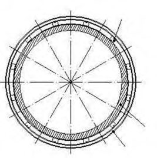
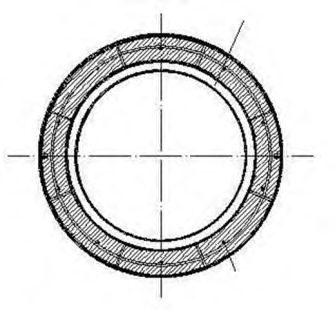
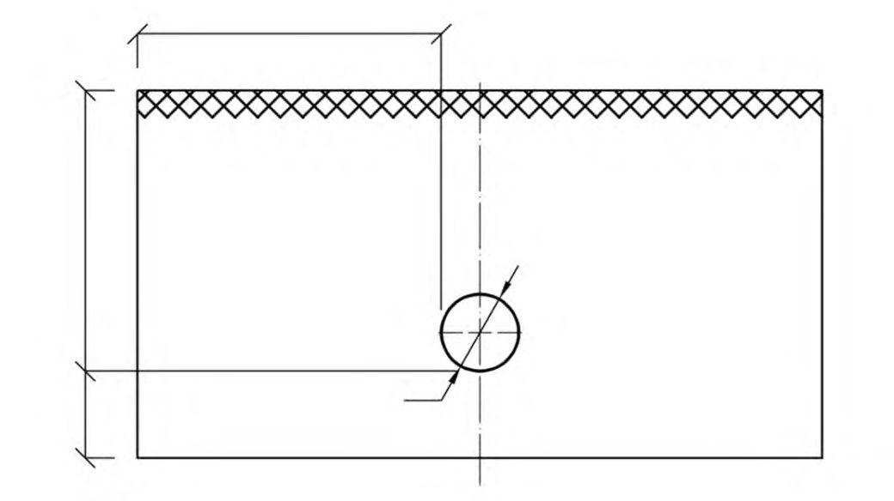
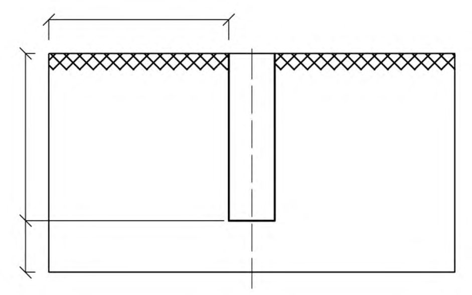
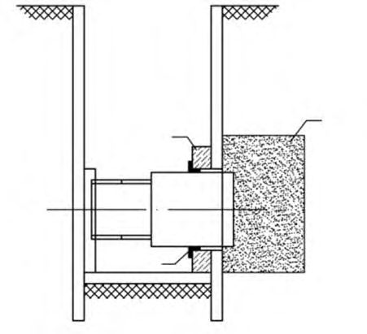
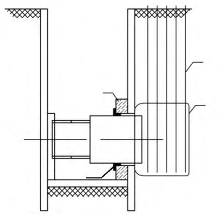
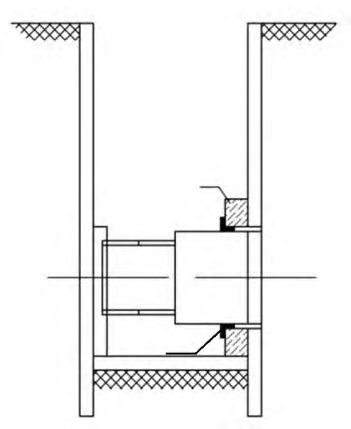
1Область применения
Настоящий свод правил устанавливает основные геотехнические требования и распространяется на проектирование и строительство (прокладку) новых и реконструируемых подземных инженерных коммуникаций (далее - подземные коммуникации) закрытым и открытым способами.
2Нормативные ссылки
В настоящем своде правил использованы нормативные ссылки на следующие документы:
ГОСТ 2284-79 Лента холоднокатаная из углеродистой конструкционной стали. Технические условия
ГОСТ 3262-75 Трубы стальные водогазопроводные. Технические условия
ГОСТ 3282-74 Проволока стальная низкоуглеродистая общего назначения. Технические условия
ГОСТ 4682-84 Концентрат баритовый. Технические условия
ГОСТ 5578-94 Щебень и песок из шлаков черной и цветной металлургии для бетонов.
Технические условия
ГОСТ 5781-82 Сталь горячекатаная для армирования железобетонных конструкций. Технические условия
ГОСТ 8267-93 Щебень и гравий из плотных горных пород для строительных работ. Технические требования
ГОСТ 8731-74 Трубы стальные бесшовные горячедеформируемые. Технические условия
ГОСТ 8732-78 Трубы стальные бесшовные горячедеформированные. Сортамент
ГОСТ 8736-2014 Песок для строительных работ. Технические условия
ГОСТ 10178-85 Портландцемент и шлакопортландцемент. Технические условия
\_\_\_\_\_\_\_\_\_\_\_\_\_\_\_\_\_\_\_\_\_\_\_\_\_\_\_\_\_\_\_\_\_\_\_\_\_\_\_\_\_\_\_\_\_\_\_\_\_\_\_\_\_\_\_\_\_\_\_\_\_\_\_\_\_\_\_\_\_\_\_\_\_\_\_\_\_
Design and construction of underground utilities by closed and cut-and-cover methods
СП ….1325800.2016
ГОСТ 14098-2014 Соединения сварные арматуры и закладных изделий железобетонных конструкций. Типы, конструкции и размеры
ГОСТ 14918-80 Сталь тонколистовая оцинкованная с непрерывных линий. Технические условия
ГОСТ 18599-2001 Трубы напорные из полиэтилена. Технические условия
ГОСТ 20295-85 Трубы стальные, сварные для магистральных газонефтепроводов. Технические условия
ГОСТ 23732-2011 Вода для бетонов и строительных растворов. Технические условия
ГОСТ 24846-2012 Грунты. Методы измерения деформаций оснований зданий и сооружений
ГОСТ 24950-81 Отводы гнутые и вставки кривые на поворотах линейной части стальных магистральных трубопроводов. Технические условия
ГОСТ 25100-2011 Грунты. Классификация
ГОСТ 27751-2014 Надежность строительных конструкций и оснований. Основные положения
ГОСТ 30416-2012 Грунты. Лабораторные испытания. Общие положения
ГОСТ 30515-2013 Цементы. Общие технические условия
ГОСТ 30672-2012 Грунты. Полевые испытания. Общие положения
ГОСТ 31108-2003 Цементы общестроительные. Технические условия
ГОСТ Р 50838-2009 (ИСО 4437:2007) Трубы из полиэтилена для газопроводов. Технические условия
ГОСТ Р 52939-2008 Руды железные товарные необогащенные. Общие технические условия
СП 16.13330.2011 «СНиП II-23-81* Стальные конструкции» (с изменением № 1)
СП 20.13330.2011 «СНиП 2.01.07-85* Нагрузки и воздействия»
СП 21.13330.2012 «СНиП 2.01.09-91 Здания и сооружения на подрабатываемых территориях и просадочных грунтах»
СП 22.13330.2011 «СНиП 2.02.01-83* Основания зданий и сооружений»
СП 24.13330.2011 «СНиП 2.02.03-85 Свайные фундаменты»
СП 25.13330.2012 «СНиП 2.02.04-88 Основания и фундаменты на вечномерзлых грунтах»
СП 28.13330.2012 «СНиП 2.03.11-85 Защита строительных конструкций от коррозии» (с изменением № 1)
СП 31.13330.2012 «СНиП 2.04.02-84* Водоснабжение. Наружные сети и сооружения» (с изменениями № 1, № 2)
СП 32.13330.2012 «СНиП 2.04.03-85 Канализация. Наружные сети и сооружения» (с изменением № 1)
СП 33.13330.2012 «СНиП 2.04.12-86 Расчет на прочность стальных трубопроводов»
СП 35.13330.2011 «СНиП 2.05.03-84* Мосты и трубы»
СП 36.13330.2012 «СНиП 2.05.06-85* Магистральные трубопроводы»
СП 45.13330.2012 «СНиП 3.02.01-87 Земляные сооружения, основания и фундаменты»
СП 46.13330.2012 «СНиП 3.06.04-91 Мосты и трубы»
СП 47.13330.2012 «СНиП 11-02-96 Инженерные изыскания для строительства. Основные положения»
СП 48.13330.2011 «СНиП 12-01-2004 Организация строительства»
СП 63.13330.2012 «СНиП 52-01-2003 Бетонные и железобетонные конструкции. Основные положения» (с изменениями № 1, № 2)
СП 66.13330.2011 Проектирование и строительство напорных сетей водоснабжения и водоотведения с применением высокопрочных труб из чугуна с шаровидным графитом (с изменением № 1)
СП 68.13330.2011 «СНиП 3.01.04-87 Приемка в эксплуатацию законченных строительством объектов. Основные положения»
СП 116.13330.2012 «СНиП 22-02-2003 Инженерная защита территорий, зданий и сооружений от опасных геологических процессов. Основные положения»
СП 246.1325800.2016 Положение об авторском надзоре за строительством зданий и сооружений
СанПиН 2.1.7.1287-03 Санитарно-эпидемиологические требования к качеству почвы
Примечание - При пользовании настоящим сводом правил целесообразно проверить действие ссылочных документов в информационной системе общего пользования - на официальном сайте Федерального агентства по техническому регулированию и метрологии в сети Интернет или по ежегодному информационному указателю «Национальные стандарты», который опубликован по состоянию на 1 января текущего года, и по выпускам ежемесячного информационного указателя «Национальные стандарты» за текущий год. Если заменен ссылочный документ, на который дана недатированная ссылка, то рекомендуется использовать действующую версию этого документа с учетом всех внесенных в данную версию изменений. Если заменен ссылочный документ, на который дана датированная ссылка, то рекомендуется использовать версию этого документа с указанным выше годом утверждения (принятия). Если после утверждения настоящего свода правил в ссылочный документ, на который дана датированная ссылка, внесено изменение, затрагивающее положение, на которое дана ссылка, то это положение рекомендуется применять без учета данного изменения. Если ссылочный документ отменен без замены, то положение, в котором дана ссылка на него, рекомендуется применять в части, не затрагивающей эту ссылку. Сведения о действии сводов правил целесообразно проверить в Федеральном информационном фонде технических регламентов и стандартов.
3Термины и определения
В настоящем своде правил применены следующие термины с соответствующими определениями:
- 3.1активный пригруз забоя
- Регулируемое давление на всю площадь забоя, действующее постоянно в процессе проходки тоннеля и уравновешивающее горное давление грунта и гидростатическое давление грунтовых вод.
- 3.2бентонитовый раствор
- Суспензия, приготовленная на основе бентонитового глинопорошка, воды и специальных добавок (при необходимости), обладающая тиксотропными свойствами, применяемая при проходке выработок и для пригруза забоя.
- 3.3бестраншейные непилотируемые технологии
- Бестраншейные технологии, не требующие постоянного присутствия персонала внутри прокладываемой коммуникации.
- 3.4бестраншейные неуправляемые технологии
- Бестраншейные технологии, позволяющие выполнять прокладку коммуникаций по трассе только прямолинейно в плане и профиле.
- 3.5бестраншейные пилотируемые технологии
- Бестраншейные технологии, требующие постоянного присутствия персонала внутри прокладываемой коммуникации.
- 3.6бестраншейные технологии
- Технологии прокладки, замены и восстановления подземных коммуникаций закрытым способом (без вскрытия земной поверхности над ними).
- 3.7бестраншейные управляемые технологии
- Бестраншейные технологии, позволяющие выполнять прокладку коммуникаций по трассе криволинейного очертания в плане и профиле.
- 3.8геотехническое проектирование
- Проектирование оснований, фундаментов и конструкций подземных сооружений, взаимодействующих с грунтом.
- 3.9гидравлический прокол (гидропрокол)
- Устройство скважины с применением кинетической энергии струи воды, выходящей под давлением из расположенной впереди трубы конической насадки .
- 3.10гидропригруз (суспензионный пригруз) забоя
- Активный пригруз забоя, создаваемый с помощью специального суспензионного глинистого (с улучшающими и (или) специальными добавками) или полимерного раствора.
- 3.11горизонтальное (наклонное) направленное бурение; ГНБ
- Многоэтапная технология бестраншейной прокладки подземных инженерных коммуникаций с помощью специализированных мобильных буровых установок, позволяющая вести управляемую проходку по криволинейной траектории, расширять скважину, протягивать трубопровод. Примечание - Бурение ведется под контролем систем локации, с применением бентонитовых (полимерных) буровых растворов.
- 3.12горная выработка
- Полость в земной коре, образуемая в результате осуществления горных работ с целью разведки и добычи полезных ископаемых, проведения инженерногеологических изысканий и строительства подземных сооружений.Источник: СП 21.13330.2012, статья 3.1
- 3.13горная закрытая выработка (закрытая выработка)
- Выработка, образуемая без вскрытия земной поверхности над ней.
- 3.14горная открытая выработка (открытая выработка)
- Выработка, образуемая с вскрытием земной поверхности над ней.
- 3.15грунтовый пригруз (грунтопригруз) забоя
- Активный пригруз забоя, создаваемый с помощью грунта, измельченного породоразрушающим органом проходческого щита при разработке забоя, модифицированного, при необходимости, специальными добавками.
- 3.16деформация основания расчетная (прогнозная)
- Деформация, определенная с применением расчетных методов и моделей.
- 3.17забой
- Место, где происходит разработка грунта открытым или закрытым (подземным) способом, перемещающееся в процессе производства работ.Источник: СП 21.13330.2012, статья 3.10
- 3.18закрытый способ строительства
- Способ строительства подземных сооружений без вскрытия земной поверхности над ними.Источник: СП 21.13330.2012, статья 3.11
- 3.19канал
- Закрытое подземное протяженное сооружение высотой менее 2 м до выступающих конструкций, предназначенное для прокладки коммуникаций (кабелей, трубопроводов и т. д.).
- 3.20коммуникации с неравнопрочными стыками
- Коммуникации, у которых прочность стыков ниже прочности стыкуемых секций и элементов или они податливы по стыкам.
- 3.21коммуникации с равнопрочными стыками
- Коммуникации, у которых прочность стыков не ниже прочности стыкуемых секций и элементов.
- 3.22микротоннелепроходческий комплекс; МТПК
- Комплект оборудования, предназначенный для прокладки подземных коммуникаций из стыкуемых труб путем их продавлива- ния с помощью домкратов и расположенной впереди трубопровода дистанционно-управляемой (в автоматическом режиме) проходческой машины, без присутствия людей в забое.
- 3.23микротоннелирование
- Технология прокладки труб закрытым способом работ с применением микротоннелепроходческого комплекса.
- 3.24обделка
- Постоянная конструкция, закрепляющая выработку и образующая ее внутреннюю поверхность.
- 3.25общий (коммуникационный) коллектор
- Подземное линейное сооружение для совместной прокладки (размещения) и обслуживания трубопроводов и кабелей различного назначения.
- 3.26основание
- Массив грунта, взаимодействующий со зданиями, сооружениями и подземными коммуникациями.
- 3.27открытый способ строительства
- Способ строительства подземных сооружений со вскрытием земной поверхности над ними.
- 3.28пеногрунтовый пригруз
- Активный пригруз забоя, создаваемый с помощью разработанного грунта с добавлением в него специальной пены.
- 3.29перебор грунта
- Расчетный параметр, задаваемый при моделировании деформаций грунтового массива в результате проходки закрытой выработки, равный отношению площади удаляемого при проходке грунта, расположенного в пределах контура выработки, к площади поперечного сечения выработки.
- 3.30пневматический пригруз (пневмопригруз, воздушный пригруз)
- Активный пригруз забоя, создаваемый с помощью сжатого воздуха. Примечание - При воздухопроникающей структуре грунта в забое может уравновешивать только гидростатическое давление грунтовых вод, при специальной обработке поверхности забоя может дополнительно уравновешивать горное давление грунта.
- 3.31подземные инженерные коммуникации
- Подземные линейные сооружения с технологическими устройствами на них, предназначенные для транспортирования жидкостей, газов, передачи энергии и информации. Примечание - Подземные инженерные коммуникации состоят из трубопроводов, кабельных линий и коллекторов.
- 3.32приемный (демонтажный) котлован (шахтный ствол)
- Вертикальная подземная выработка для демонтажа проходческого оборудования в конечной точке трассы прокладываемой подземной коммуникации.
- 3.33продавливание
- Процесс строительства подземной коммуникации путем продавливания в грунте труб или тоннельных конструкций с открытым концом и, как правило, ножевым элементом, сопровождаемый разрушением грунта в забое и удалением его по мере их продвижения.
- 3.34прокол
- Процесс строительства подземной коммуникации путем статического, ударного или ударно-импульсного внедрения в грунт труб (штанг) с конусным (направляющим) наконечником, сопровождаемый уплотнением окружающего массива грунта.
- 3.35прокол с пневмопробойником
- Устройство скважины с применением самодвижущегося пневматического рабочего органа ударного действия, образующего скважину и уплотняющего окружающий массив грунта.
- 3.36расчетная область
- Область конечных размеров, включающая в себя подземное сооружение или его фрагмент и фрагмент основания, рассматриваемая в расчетной модели и подлежащая дискретизации конечными элементами.
- 3.37реновация (восстановление) коммуникации (трубопровода)
- Бестраншейная технология восстановления (замены) коммуникации на всем ее протяжении, выполняемая без или с разрушением старой коммуникации.
- 3.38специальный коллектор
- Подземное линейное сооружение для прокладки (размещения) и обслуживания однотипных сетей (канализация, водосток, кабельные линии и др.).
- 3.39стартовый (монтажный) котлован (шахтный ствол)
- Вертикальная подземная выработка для монтажа проходческого оборудования в начальной точке трассы прокладываемого трубопровода.
- 3.40статический прокол
- Устройство скважины путем вдавливания с помощью домкратов трубы (штанги) с конусным наконечником, сопровождаемое уплотнением окружающего массива грунта.
- 3.41тампонажный раствор
- Рационально составленная, перемешанная до однородного состояния смесь вяжущего вещества, заполнителя, воды и добавок.
- 3.42тоннелепроходческий механизированный комплекс; ТПМК
- Комплект механизмов и устройств для разработки грунта, крепления забоя, возведения обделки и нагнетания тампонажного раствора за обделку.
- 3.43тоннель
- Горизонтальное или наклонное протяженное подземное сооружение высотой 2 м и более до выступающих конструкций, предназначенное для прокладки железных и автомобильных дорог, пешеходных переходов, коммуникаций и т. д.Источник: СП 21.13330.2012, статья 3.36
- 3.44трасса
- Положение оси линейного сооружения (трубопровода, кабеля и др.), отвечающее ее проектному положению на местности.
- 3.45ударно-импульсный прокол (вибропрокол)
- Устройство скважины путем забивки с помощью ударно-вибрационно-вдавливающей установки (вибромолота) трубы с конусным наконечником, сопровождаемое уплотнением окружающего массива грунта.
4Общие положения
- исходные данные для проектирования должны собираться в необходимом и достаточном объеме, регистрироваться и интерпретироваться специалистами, обладающими надлежащей квалификацией и опытом;
- должны быть обеспечены координация и связь между специалистами по изысканиям, проектированию и строительству;
- должны быть обеспечены соответствующие надзор и контроль качества при изготовлении строительных изделий и выполнении работ на строительной площадке;
- проектные и строительные работы должны выполняться квалифицированным и опытным персоналом и удовлетворять требованиям стандартов, сводов правил и технических условий;
- применяемые материалы и изделия должны удовлетворять требованиям проекта, стандартов и технических условий;
- техническое обслуживание подземных коммуникаций и связанных с ними инженерных систем должно обеспечивать их безопасность и рабочее состояние на весь срок эксплуатации;
- подземные коммуникации должны применяться по их назначению в соответствии с проектом.
- по виду - трубопроводы, кабельные линии и коллекторы.
- по назначению - водопроводы, водоводы, газопроводы, канализация, кабели слабого тока, силовые кабели, общие коллекторы, специальные коллекторы, нефтепроводы, нефтепродуктопроводы, теплопроводы и др.;
- по принципу транспортирования жидкостей и газов - самотечные и напорные;
- по материалу - выполняемые из стали, железобетона, чугуна, полимера, керамики, хризотилцемента и др.;
- по типу стыков секций и элементов - с равнопрочными (трубы на сварке и др.) и неравнопрочными (трубы с раструбными соединениями и др.) стыками;
- по способу защиты - без защитных конструкций (прокладываемые в грунте) и с защитными конструкциями (в коллекторе, канале, футляре и др.);
- по проходимости - проходные, полупроходные и непроходные.
Примечание - Технические требования к трубам с защитным бетонным покрытием в металлополимерной оболочке приведены в приложении В.
- требований технических условий на прокладываемые подземные коммуникации;
- требований действующих нормативных документов на проектирование и строительство подземных коммуникаций соответствующего вида;
- размеров, материала, протяженности трассы, точности прокладки подземных коммуникаций;
- инженерно-геологических, гидрогеологических и градостроительных условий строительства;
- обеспечения надежности ранее возведенных зданий, сооружений и ранее проложенных подземных коммуникаций (далее - сооружения), расположенных в зоне влияния строительства;
- наличия строительного оборудования и материалов;
- экологических требований;
- рельефа местности.
СП ….1325800.2016
- по необходимости постоянного присутствия персонала внутри прокладываемой подземной коммуникации - на пилотируемые и непилотируемые;
- по способности выполнять прокладку подземных коммуникаций по трассе криволинейного очертания - на управляемые и неуправляемые;
- по наличию вдоль оси трассы ранее проложенной коммуникации (трубопровода) - прокладка новой коммуникации в условиях отсутствия ранее проложенной коммуникации, реновация существующей коммуникации с ее разрушением или без;
- по воздействию на массив грунта, окружающего прокладываемую подземную коммуникацию, - без деформаций грунта (реновация без разрушения старой коммуникации), с уплотнением грунта, с удалением (извлечением) грунта.
В качестве ограждений траншей и котлованов при прокладке подземных коммуникаций открытым способом следует использовать:
- ограждения из отдельных элементов (металлических труб, двутавров, свай и др.);
- шпунтовые ограждения;
- ограждения типа «стена в грунте», устраиваемые траншейным способом, а также из буросекущихся или бурокасательных свай;
- ограждения, устраиваемые с применением струйной или иной технологии закрепления грунта;
- инвентарные щиты (крепь);
- ограждения комбинированного типа и др.
Примечание - При соответствующем технико-экономическом обосновании допускается применять фундаменты других видов.
- с глубиной заложения более 5 м;
- 3-й геотехнической категории;
- в зоне влияния строительства которых расположены существующие сооружения;
- размещаемых на территориях с возможным развитием опасных инженерногеологических процессов.
5Требования к инженерно-геологическим изысканиям
СП ….1325800.2016
- для технико-экономических расчетов по выбору оптимальных вариантов трассы и методов строительства подземных коммуникаций;
- проектирования линейных и локальных участков подземных коммуникаций;
- выполнения расчетов по предельным состояниям, геотехнического моделирования и расчетов с применением нелинейных моделей грунтов;
- прогнозирования геотехнических рисков, выполнения прогноза изменения инженерногеологических и гидрогеологических условий территории;
- оценки влияния строительства, разработки мероприятий по обеспечению сохранности и безопасной эксплуатации окружающей застройки и подземных сооружений, расположенных в зоне влияния строительства;
- выбора наиболее эффективных способов, технологий и оборудования для строительных работ.
Расстояние между инженерно-геологическими скважинами по трассе строительства подземных коммуникаций следует принимать не более 25 м, если в предварительно назначаемой зоне влияния строительства (6.4.6) подземных коммуникаций расположены сооружения.
Примечание - Расстояние между точками статического зондирования следует назначать не более чем для инженерно-геологических скважин.
Таблица 5.1 - Глубина скважин
| Способ строительства подземных коммуникаций | Глубина скважины, м |
|---|---|
| Открытый способ (строительство в траншеях и котлованах): а) устройство коммуникаций в грунте или на ленточных фундаментах: - с применением ограждающих конструкций; - без применения ограждающих конструкций | 1,5 Н rs + 5 м, но не менее 10 м и не менее Н s + 2 D н , |
| 1,5 Н s + 5 м, но не менее Н s +2 D н | |
| Закрытый способ (щитовая проходка, микротоннелирование, ГНБ и др.) | Н t + 2 D н , но не менее: Н t + 2 м при D н < 1 м, Н t + 5 м при D н ≥ 1 м |
D н - наружный диаметр или поперечный размер подземной коммуникации; Нrs - глубина заложения подошвы ограждающей конструкции; Нs и Нt - глубины заложения низа открытой и закрытой соответственно выработок.
- необходимости анализа возможности проявления на примыкающей к зоне трассы строительства подземных коммуникаций опасных инженерно-геологических процессов;
- выполнения оценки влияния строительства подземных коммуникаций на окружающую застройку (ориентировочные размеры зоны влияния строительства определяются согласно
6.4.6); в этом случае инженерно-геологические скважины и точки статического зондирования должны располагаться в непосредственной близости от существующих сооружений;
- решения вопроса о необходимости (разработки проекта) усиления грунтов основания и фундаментов существующего сооружения, расположенного в зоне влияния;
- необходимости получения данных для расчета изменения гидрогеологических условий на территории, примыкающей к трассе строительства подземной коммуникации.
6Геотехническое проектирование подземных коммуникаций
6.1Общие указания
- обеспечивающие надежность, долговечность и экономичность на всех стадиях строительства и эксплуатации подземных коммуникаций;
- не допускающие сверхпредельных деформаций существующих сооружений окружающей застройки;
- не допускающие сверхпредельных вредных воздействий на экологическую ситуацию;
- допускающие перспективное применение подземного пространства.
- нормативных документов на проектирование и строительство подземных коммуникаций соответствующего вида;
- технических условий на прокладываемые подземные коммуникации, выданных эксплуатирующей организацией;
- технического задания на проектирование.
- инженерно-геологических и гидрогеологических условий;
- уровня ответственности и геотехнической категории объекта;
- необходимости демонтажа старых строений, подземных сооружений и фундаментов на площадках строительства;
- возможности аварийных утечек и повреждений подземных коммуникаций;
- необходимости выноса и перекладки ранее проложенных подземных коммуникаций;
- необходимости проведения археологических изысканий;
- перспективных планов развития подземного пространства территории и строительства объектов жилищного, культурно-бытового и иного назначения.
- отчетов об инженерных изысканиях (инженерно-геодезических, инженерногеологических, инженерно-экологических);
- инженерной цифровой модели местности (плана) с отображением подземных и надземных сооружений;
- отчетов о техническом обследовании существующих сооружений окружающей застройки в зоне влияния строительства;
- результатов стационарных наблюдений и мониторинга (при строительстве на территориях с проявлениями опасных инженерно-геологических процессов);
- технических условий, выданных эксплуатирующей организацией;
- специальных технических условий для разработки проектной документации (при наличии).
Примечание - Категории технического состояния сооружений приведены в соответствии с СП 22.13330.
- положения в плане и глубины заложения трасс коммуникаций;
- материала, размеров и других параметров основных и защитных конструкций (при наличии) коммуникаций,
- способов и технологии проходки и устройства локальных и линейных участков коммуникаций;
- ограждающих и удерживающих конструкций (крепи) открытых и закрытых выработок;
- допустимости влияния строительства на окружающую застройку;
- мер защиты окружающей среды и застройки (при необходимости);
- методов и параметров контроля качества строительства;
- методов и параметров контроля при геотехническом мониторинге.
- планов перспективного развития городов и других населенных пунктов;
- инженерно-геологических и гидрогеологических условий строительства (в том числе наличия специфических грунтов и опасных геологических процессов);
- неблагоприятных санитарных зон (кладбища, свалки, скотомогильники);
- необходимости сохранности окружающей среды и сооружений окружающей застройки;
- допустимости: прокладки коммуникаций по территории населенных пунктов, пересечения с существующими сооружениями (коммуникациями других видов), прокладки совместно с коммуникациями других видов, прокладки внутри объектов действующей инфраструктуры (тоннелей, переходов и др.);
- минимально допустимых расстояний по вертикали и горизонтали от оси (в свету) проектируемых коммуникаций до ранее возведенных сооружений;
- минимально допустимых радиусов поворота трассы проектируемых коммуникаций.
Должны быть рассмотрены все расчетные ситуации и их сценарии как для стадии строительства, так и для стадии эксплуатации подземных коммуникаций. Для каждой расчетной си- туации необходимо проверять, чтобы не наступало ни одно из предельных состояний, в соответствии с ГОСТ 27751, СП 22.13330 и настоящим сводом правил.
- первая группа предельных состояний - состояния, достижение которых ведет к потере несущей способности конструкций или оснований, к невозможности эксплуатации сооружения;
- вторая группа предельных состояний - состояния, при достижении которых нарушается нормальная эксплуатация подземных коммуникаций, исчерпывается ресурс их долговечности.
- потерю устойчивости или равновесия (всплытие и др.) коммуникаций или оснований;
- разрушение любого характера (например, пластическое, хрупкое, усталостное) коммуникаций или их конструктивных элементов;
- явления, при которых возникает необходимость прекращения эксплуатации коммуникаций (разрушение или чрезмерные деформации оснований).
К первой группе предельных состояний относятся также аварийные предельные состояния - специфические предельные состояния, отнесенные ГОСТ 27751 к особым предельным состояниям.
- достижение предельных деформаций конструкций подземных коммуникаций или их оснований, устанавливаемых исходя из технологических, конструктивных или эстетикопсихологических требований;
- достижение предельных уровней колебаний конструкций или оснований, вызывающих вредные для здоровья людей физиологические воздействия и негативные воздействия для оборудования, конструкций и оснований;
- образование трещин, не нарушающих нормальную эксплуатацию коммуникаций, или достижение предельной ширины раскрытия трещин;
- достижение предельных деформаций или предельных состояний сооружений окружающей застройки, расположенных в зоне влияния строительства;
- другие явления, при которых возникает необходимость ограничения во времени эксплуатации коммуникаций из-за неприемлемого снижения их эксплуатационных качеств или расчетного срока службы.
- надежность и долговечность в период расчетного срока службы;
- защиту внутреннего объема подземных коммуникаций от поступления подземных вод;
- защиту конструкций подземных коммуникаций от агрессивного воздействия подземных вод и грунтов, а также от воздействий блуждающих токов;
- соблюдение термовлажностного режима в каналах, коллекторах и тоннелях в соответствии с эксплуатационными требованиями;
- долговечность и ремонтопригодность средств защиты от подземных вод в течение всего срока эксплуатации подземной коммуникации;
- минимальное негативное воздействие на окружающую застройку;
- соответствие требованиям пожарной безопасности;
- соответствие санитарным и экологическим нормам.
- гидроизоляционные покрытия и материалы;
- конструкции из водонепроницаемого бетона;
- дренажные устройства и мероприятия, позволяющие снижать уровень подземных вод на прилегающей территории или выполнять перехват подземных вод непосредственно на контуре подземной коммуникации.
Примечание - При необходимости допускается применять комбинацию указанных способов защиты.
6.2Нагрузки и воздействия, учитываемые в расчетах
Нагрузки на основание допускается определять без учета их перераспределения подземной коммуникацией (без учета жесткости подземной коммуникации):
- при проверке потери общей устойчивости массива грунта основания совместно с подземной коммуникацией;
- расчете оснований подземных коммуникаций 1-й геотехнической категории;
- расчете средних осадок оснований подземных коммуникаций;
- расчете оснований подземных коммуникаций, в результате которого проверяется условие самотечности коммуникаций;
- расчете оснований подземных коммуникаций, в результате которого проверяется герметичность неравнопрочных стыковых соединений между элементами сборных конструкций коммуникаций.
Все расчеты подземных коммуникаций должны проводиться на расчетные значения нагрузок, которые определяют умножением нормативных значений на соответствующий коэффициент надежности по нагрузке.
Нагрузки и воздействия на основание, подземную коммуникацию или ее отдельные конструктивные элементы, коэффициенты надежности по нагрузке, а также возможные сочетания нагрузок и коэффициенты сочетаний должны приниматься согласно требованиям СП 20.13330, а также нормативных документов на проектирование подземных коммуникаций, оснований и фундаментов соответствующих видов.
При расчете оснований подземных коммуникаций коэффициент надежности по нагрузке принимают:
- по первой группе предельных состояний - по СП 20.13330, а также норм и правил на проектирование подземных коммуникаций, оснований и фундаментов соответствующих видов;
- по второй группе предельных состояний - равным единице, если в нормативных документах на проектирование подземных коммуникаций соответствующих видов не установлены другие значения.
- вес конструкций подземных коммуникаций;
- вес грунта насыпей и засыпок;
- вес сооружений, находящихся в зоне их воздействия на подземную коммуникацию;
- давление грунта и напряжения в основании в долговременных ситуациях;
- давление подземных вод и фильтрационные силы при установившемся режиме;
- воздействие предварительного напряжения подземной коммуникации (упругий изгиб трубопровода и др.).
- вес стационарного оборудования;
- давление грунта и напряжения в основании в кратковременных ситуациях;
- снятие нагрузки при выемке грунта;
- давление подземных вод и фильтрационные силы при неустановившемся режиме, избыточные поровые давления;
- давление жидкостей и газов внутри подземных коммуникаций;
- длительные вибрационные воздействия от оборудования и транспорта;
- нагрузки от складируемых на поверхности грунта материалов;
- температурные воздействия в период эксплуатации от транспортируемых по подземным коммуникациям жидкостей и газов;
- нагрузки и воздействия обусловленные влажностью, ползучестью и усадкой материалов;
- силы морозного пучения;
- деформации основания подземных коммуникаций, вызванные устройством открытых (траншей и котлованов) и закрытых (щитовой проходки, микротоннелирования и др.) выработок;
- изменения отметок поверхности земли (насыпей и др.) и уровня подземных вод;
- деформации основания подземных коммуникаций, вызванные ухудшением свойств грунта и не сопровождающиеся коренным изменением структуры грунта, а также оттаиванием вечномерзлых грунтов;
- негативное трение и др.
При определении нагрузок и воздействий на основание и подземные коммуникации к временным кратковременным нагрузкам и воздействиям следует относить:
- нагрузки от транспортных и подъемно-транспортных средств;
- нагрузки и воздействия, возникающие при испытании подземных коммуникаций (давление гидравлического удара и др.);
- технологические воздействия при выполнении строительных работ (давление щитовых домкратов, давление раствора при цементации, извлечение шпунта, пригруз забоя и др.);
- температурно-климатические воздействия в период строительства и др.
При определении нагрузок и воздействий на основание и подземные коммуникации к временным особым нагрузкам и воздействиям следует относить:
- нагрузки, обусловленные опасными геологическими процессами;
- воздействия, обусловленные деформациями основания подземных коммуникаций и сопровождающиеся коренным изменением структуры грунта;
- кратковременные вибрационные воздействия от оборудования и транспорта;
- взрывные воздействия;
- нагрузки, обусловленные пожаром;
- нагрузки, вызванные резким нарушением процесса транспортирования жидкостей и газов в подземных коммуникациях.
Примечание - В зависимости от рассматриваемого предельного состояния, а также проектной ситуации (долговременной или кратковременной) некоторые временные длительные нагрузки могут быть отнесены к кратковременным и наоборот.
6.3Основные требования к расчету оснований
Проектирование оснований подземных коммуникаций, строящихся на (в) специфических грунтах и в особых условиях, следует выполнять с учетом требований раздела 6 СП 22.13330.2011.
- типа основания (естественное или искусственное);
- типа, конструкции, материала, размеров и глубины заложения фундаментов (если подземная коммуникация строится на фундаментах);
- мероприятий, указанных в СП 22.13330, применяемых для снижения деформаций оснований проектируемых подземных коммуникаций (при необходимости);
- мероприятий, указанных в 6.5, применяемых для снижения деформаций оснований сооружений окружающей застройки (при необходимости).
Основания проектируемых подземных коммуникаций рассчитывают по деформациям: в многолетнемерзлых (мерзлых) грунтах - в случаях, указанных в пункте 7.1.3 СП 25.13330.2012; в немерзлых грунтах - во всех случаях, кроме указанных в 6.3.4-6.3.6.
- основание подземных коммуникаций сложено скальными или слабодеформируемыми дисперсными грунтами (модуль деформации больше 50 МПа по классификации ГОСТ 25100);
- среднее давление под подземными коммуникациями (при устройстве в грунте) или их ленточными фундаментами не превышает расчетного сопротивления грунтов основания (подраздел 5.6 СП 22.13330.2011), отсутствуют специфические грунты в основании, особые нагрузки и воздействия, опасные геологические процессы, а также выполняется одно из следующих условий:
- степень изменчивости сжимаемости основания меньше предельной (пункт 5.6.49 СП 22.13330.2011), дополнительные нагрузки на земной поверхности отсутствуют,
- инженерно-геологические условия площадки строительства соответствуют области применения типового проекта,
- в основании подземных коммуникаций отсутствуют очень сильно и сильно деформируемые дисперсные грунты (модуль деформации менее 10 МПа согласно классификации ГОСТ 25100), при условии отсутствия нагрузок на поверхности земли (отсыпка грунта и др.).
где s - совместная расчетная (прогнозная) деформация основания и подземной коммуникации; su - предельное значение совместной деформации основания и подземной коммуникации, устанавливаемое в соответствии с 6.3.8.
Совместная деформация основания и подземной коммуникации может характеризоваться следующими показателями: абсолютными вертикальными (горизонтальными) перемещениями, относительной разностью вертикальных (горизонтальных) перемещений, радиусом кривизны (кривизной).
Примечания
1 Для определения совместной расчетной деформации основания и подземной коммуникации s могут применяться аналитические, численные и другие методы.
2 В необходимых случаях для определения совместной расчетной деформации с учетом длительности процессов и прогноза времени консолидации основания следует рассчитывать деформации основания во времени с учетом первичной и вторичной консолидаций.
3 При расчете основания по деформациям необходимо учитывать возможность изменения как расчетных, так и предельных значений деформаций основания за счет применения конструктивных или геотехнических мероприятий.
Предельные значения совместной деформации основания и подземной коммуникации следует принимать согласно действующим нормам на проектирование коммуникаций соответствующего вида и требованиям настоящего свода правил.
Для подземных коммуникаций, предельные значения совместных деформаций которых в нормах отсутствуют, проверку допустимости совместных деформаций необходимо выполнять путем расчетов подземных коммуникаций по предельным состояниям с учетом требований
ГОСТ 27751, норм на проектирование коммуникаций соответствующего вида и настоящего свода правил.
Таблица 6.1 - Условия, при которых требуются поверочные расчеты подземных коммуникаций по предельным состояниям
| Вид | Трубопроводы | Трубопроводы | Трубопроводы | Трубопроводы | Коллекторы, каналы и другие защитные | Коллекторы, каналы и другие защитные |
|---|---|---|---|---|---|---|
| поверочного | Напорные, со стыками | Напорные, со стыками | Самотечные, со стыками | Самотечные, со стыками | конструкции со стыками | конструкции со стыками |
| расчета | равнопрочными | неравнопрочными | равнопрочными | неравнопрочными | равнопрочными | неравнопрочными |
| Группа предельных состояний I | Группа предельных состояний I | Группа предельных состояний I | Группа предельных состояний I | Группа предельных состояний I | Группа предельных состояний I | Группа предельных состояний I |
| (I.1) Проверка прочности конструкций подземных трубопрово- дов на максимальные продольные напряжения | + | - | + | - | + | - |
| (I.2) Проверка прочности конструкций подземных трубопрово- дов на максимальные кольцевые напряжения | + | + | + | + | + | + |
| (I.3) Проверка потери устойчивости положения конструкций подземных коммуникаций в результате потери устойчивости вмещающего их массива грунта | (1) | (1) | (1) | (1) | (1) | (1) |
| Группа предельных состояний II | Группа предельных состояний II | Группа предельных состояний II | Группа предельных состояний II | Группа предельных состояний II | Группа предельных состояний II | Группа предельных состояний II |
| (II.1) Проверка условия самотечности конструкций подземных коммуникаций | (2) | (2) | + | + | (2) | (2) |
| (II.2) Проверка герметичности стыковых соединений сборных конструкций подземных коммуникаций | - | + | - | + | - | + |
| (II.3.а) Проверка образования продольных трещин в конструк- циях подземных коммуникаций (II.4.а) Расчет ширины раскрытия продольных трещин в кон- струкциях подземных коммуникаций | (3) | (3) | (3) | (3) | (3) | (3) |
| (II.3.б) Проверка образования поперечных трещин в конструк- циях подземных коммуникаций (II.4.б) Расчет ширины раскрытия поперечных трещин в кон- струкциях подземных коммуникаций | (3) | - | (3) | - | (3) | - |
| Обозначения: «-» - проверка не выполняется; «+» - проверка выполняется; (1) - на основание подземной коммуникации передаются значительные горизонтальные нагрузки, подземная коммуникация расположена на откосе или склоне; (2) - проверка выполняется, если в нормах на проектирование коммуникации указан минимально допустимый уклон; (3) - проверка выполняется для бетонных, железобетонных и фибробетонных конструкций. Примечание - При необходимости, а также в случае требований норм на проектирование подземных коммуникаций соответствующего вида следует также выполнять проверку коммуника- ций на общую устойчивость в продольном направлении, всплытие и овализацию. | Обозначения: «-» - проверка не выполняется; «+» - проверка выполняется; (1) - на основание подземной коммуникации передаются значительные горизонтальные нагрузки, подземная коммуникация расположена на откосе или склоне; (2) - проверка выполняется, если в нормах на проектирование коммуникации указан минимально допустимый уклон; (3) - проверка выполняется для бетонных, железобетонных и фибробетонных конструкций. Примечание - При необходимости, а также в случае требований норм на проектирование подземных коммуникаций соответствующего вида следует также выполнять проверку коммуника- ций на общую устойчивость в продольном направлении, всплытие и овализацию. | Обозначения: «-» - проверка не выполняется; «+» - проверка выполняется; (1) - на основание подземной коммуникации передаются значительные горизонтальные нагрузки, подземная коммуникация расположена на откосе или склоне; (2) - проверка выполняется, если в нормах на проектирование коммуникации указан минимально допустимый уклон; (3) - проверка выполняется для бетонных, железобетонных и фибробетонных конструкций. Примечание - При необходимости, а также в случае требований норм на проектирование подземных коммуникаций соответствующего вида следует также выполнять проверку коммуника- ций на общую устойчивость в продольном направлении, всплытие и овализацию. | Обозначения: «-» - проверка не выполняется; «+» - проверка выполняется; (1) - на основание подземной коммуникации передаются значительные горизонтальные нагрузки, подземная коммуникация расположена на откосе или склоне; (2) - проверка выполняется, если в нормах на проектирование коммуникации указан минимально допустимый уклон; (3) - проверка выполняется для бетонных, железобетонных и фибробетонных конструкций. Примечание - При необходимости, а также в случае требований норм на проектирование подземных коммуникаций соответствующего вида следует также выполнять проверку коммуника- ций на общую устойчивость в продольном направлении, всплытие и овализацию. | Обозначения: «-» - проверка не выполняется; «+» - проверка выполняется; (1) - на основание подземной коммуникации передаются значительные горизонтальные нагрузки, подземная коммуникация расположена на откосе или склоне; (2) - проверка выполняется, если в нормах на проектирование коммуникации указан минимально допустимый уклон; (3) - проверка выполняется для бетонных, железобетонных и фибробетонных конструкций. Примечание - При необходимости, а также в случае требований норм на проектирование подземных коммуникаций соответствующего вида следует также выполнять проверку коммуника- ций на общую устойчивость в продольном направлении, всплытие и овализацию. | Обозначения: «-» - проверка не выполняется; «+» - проверка выполняется; (1) - на основание подземной коммуникации передаются значительные горизонтальные нагрузки, подземная коммуникация расположена на откосе или склоне; (2) - проверка выполняется, если в нормах на проектирование коммуникации указан минимально допустимый уклон; (3) - проверка выполняется для бетонных, железобетонных и фибробетонных конструкций. Примечание - При необходимости, а также в случае требований норм на проектирование подземных коммуникаций соответствующего вида следует также выполнять проверку коммуника- ций на общую устойчивость в продольном направлении, всплытие и овализацию. | Обозначения: «-» - проверка не выполняется; «+» - проверка выполняется; (1) - на основание подземной коммуникации передаются значительные горизонтальные нагрузки, подземная коммуникация расположена на откосе или склоне; (2) - проверка выполняется, если в нормах на проектирование коммуникации указан минимально допустимый уклон; (3) - проверка выполняется для бетонных, железобетонных и фибробетонных конструкций. Примечание - При необходимости, а также в случае требований норм на проектирование подземных коммуникаций соответствующего вида следует также выполнять проверку коммуника- ций на общую устойчивость в продольном направлении, всплытие и овализацию. |
6.4Оценка влияния строительства на окружающую застройку
- заказчик и исполнитель работ по оценке влияния;
- наименование, расположение, уровень ответственности и геотехническая категория проектируемых подземных коммуникаций;
- наименования, адреса, уровни ответственности сооружений окружающей застройки;
- категория сложности инженерно-геологических условий;
- особые условия строительства;
- особые требования к оценке влияния;
- перечень передаваемых заказчиком исходных данных.
- проектные решения прокладываемых подземных коммуникаций (в том числе проект организации строительства);
- результаты инженерно-геологических изысканий в зоне прокладки подземных коммуникаций;
- результаты гидрогеологического прогноза (при наличии);
- результаты обследования сооружений окружающей застройки;
- результаты сопоставительного опыта геотехнического мониторинга перемещений поверхности земли и массива грунта при проходке выбранных (аналогично выбранным) в проекте методов строительства и проходческого (при необходимости другого) оборудования в схожих инженерно-геологических условиях (при наличии);
- архивные материалы (при наличии).
Примечания
- 1 Гидрогеологический прогноз допускается выполнять в составе работ по оценке влияния.
2 Для подземных коммуникаций окружающей застройки обследование допускается не выполнять при наличии исходных данных, достаточных для выполнения расчетов в соответствии с приложением И.
- краткую характеристику инженерно-геологических условий строительства;
- краткую характеристику проектируемых подземных коммуникаций;
- краткую характеристику сооружений окружающей застройки;
- описание методик прогнозных расчетов (моделирования) и оценки влияния;
- результаты прогнозных расчетов (моделирования) и оценки влияния;
- выводы о степени влияния и допустимости дополнительных деформаций сооружений окружающей застройки;
- рекомендации по обеспечению сохранности и перечень мер защиты сооружений окружающей застройки.
Если в процессе мониторинга зафиксированы опасные отклонения контролируемых параметров от их прогнозных значений, при необходимости, следует для еще не построенных участков коммуникаций повторно выполнить прогнозные расчеты и оценку влияния, а также принять или откорректировать по ним проектные решения. В этом случае откорректированные расчетные параметры уточненной модели следует принимать после ее верификации с результатами мониторинга на уже построенных участках.
Результаты мониторинга следует передавать представителям заказчика и авторского надзора, а также, при наличии разрешения заказчика, другим заинтересованным организациям, заносить в базы данных для накопления сопоставимого опыта.
Примечания
1 Для предварительной оценки размер зоны влияния допускается принимать равным: 1,5 Нto - при проходке закрытых выработок, где Нto - глубина заложения оси закрытой выработки; 2 Нs и 3 Нs - при проходке локальных открытых выработок (котлованов и шахтных стволов) с применением ограждений из железобетонных или стальных соответственно (а также выработок с откосами) конструкций, где Нs - глубина заложения низа открытой выработки; 3 Нs и 4 Нs - при проходке протяженных открытых выработок (траншей) с применением ограждений из железобетонных или стальных соответственно (деревянных конструкций, траншей с откосами) конструкций.
2 Размер зоны влияния строительства подземных коммуникаций допускается ограничивать расстоянием, при котором расчетное значение дополнительной осадки грунтового массива или основания существующего сооружения окружающей застройки не превышает 1 мм, за исключением расположения на границе зоны влияния сооружений окружающей застройки, категория технического состояния которых предаварийная или аварийная. Размер зоны влияния измеряется от границ проектируемой выработки.
Перед выполнением оценки влияния необходимо провести техническое обследование состояния конструкций сооружений окружающей застройки, расположенных в предварительно назначаемой зоне влияния нового строительства или реконструкции. По результатам технического обследования следует определить категорию технического состояния сооружений окружающей застройки согласно приложению Д СП 22.13330.2011.
Примечание - Обследование подземных коммуникаций, кроме коллекторов и тоннелей проходного типа 3-й геотехнической категории, допускается не выполнять.
- изменение напряженно-деформированного состояния грунтового массива в зоне строительства подземных коммуникаций;
- дополнительные деформации и (или) напряженно-деформированное состояние сооружений окружающей застройки.
Для сооружений окружающей застройки, по которым предельные значения дополнительных деформаций оснований и сооружений в нормативных документах отсутствуют, проверку допустимости дополнительных деформаций необходимо выполнять путем поверочных расчетов по предельным состояниям согласно требованиям ГОСТ 27751 с учетом действующих и дополнительных нагрузок и воздействий. При этом в результате прогноза должны быть определены значения параметров напряженно-деформированного состояния сооружений или их оснований, необходимые для выполнения поверочных расчетов по предельным состояниям.
Примечание - Выбор предельного состояния и определение допустимости дополнительных деформаций существующих подземных коммуникаций допускается осуществлять по приложению И.
- результатов инженерных изысканий для строительства;
- нелинейного механического поведения грунтов основания;
- результатов гидрогеологического прогноза;
- данных, характеризующих назначение, техническое состояние, конструктивные и технологические особенности сооружений окружающей застройки;
- параметров устраиваемых выработок и коммуникаций;
- очередности и стадийности строительных работ;
- технологии производства работ;
- взаимодействия конструкций подземных коммуникаций с примыкающим грунтовым массивом.
Примечание - Для предварительных прогнозных расчетов сооружений окружающей застройки, при геотехнических категориях 2-й и 3-й объекта строительства, а также для окончательных прогнозных расчетов объекта строительства 1-й геотехнической категории допускается применять эмпирические и аналитические методы.
- сбор информации об инженерно-геологических условиях участка; объектах окружающей застройки, расположенных в предварительно назначенной зоне влияния; проектируемых подземных коммуникациях;
- выявление основных (эксплуатационных) и дополнительных (вызванных строительными работами) нагрузок и воздействий на окружающую застройку;
- выбор нагрузок и воздействий, подлежащих моделированию;
- выбор предельных состояний сооружений окружающей застройки, требующих поверочных расчетов;
- принятие решения о включении сооружений окружающей застройки или их отдельных конструкций в модель;
- принятие решения о выполнении расчетов в плоской или пространственной постановке;
- выбор программного комплекса для численных расчетов;
- выбор конструктивных элементов сооружений окружающей застройки и проектируемой подземной коммуникации, подлежащих моделированию;
- выбор (определение) границ расчетной области;
- построение геометрической модели;
- составление общей модели объекта, охватывающей инженерно-геологические и конструктивные элементы;
- выбор вида и параметров модели грунта;
- выбор вида контактных элементов и назначение их параметров;
- ввод расчетных характеристик прочности и жесткости элементов;
- ввод граничных условий;
- построение сетки конечных элементов;
- выбор этапов строительства коммуникаций, разбивка этапов на расчетные шаги; составление пошаговых расчетных схем;
- выполнение расчетов;
- выбор (расчет) необходимых для проверки по предельным состояниям параметров напряженно-деформированного состояния (либо его изменения) оснований и конструкций сооружений окружающей застройки.
СП ….1325800.2016
Следует применять сертифицированные и апробированные программные комплексы, для которых выполнялось сопоставление результатов прогнозных расчетов и геотехнического мониторинга по аналогичным объектам в схожих инженерно-геологических условиях.
- в одну стадию: с применением геотехнического программного комплекса рассчитывается трехкомпонентная модель «проектируемая подземная коммуникация - грунтовый массив - ранее возведенные сооружения»;
- в две (или более) стадии: первая стадия - с применением геотехнического программного комплекса рассчитывается двухкомпонентная модель «проектируемая подземная коммуникация - грунтовый массив»; в результате ее решения определяются перемещения грунта, соответствующие положению ранее возведенных сооружений; вторая стадия - с применением программного комплекса, предназначенного для анализа работы конструкций, рассчитываются конструкции ранее возведенных сооружений на заданные перемещения грунта, которые были определены на первой стадии расчетов.
Для предварительной оценки влияния строительства на ранее возведенные сооружения нормального и повышенного уровней ответственности, а также для окончательной оценки вли- яния на сооружения пониженного уровня ответственности допускается назначать размеры расчетной области и выбирать геомеханическую модель грунта согласно приложению Е.
- уточнять границы предварительно назначенных зон влияния проходки открытых и закрытых выработок, а также перечень расположенных в зонах влияния ранее возведенных сооружений окружающей застройки;
- определять степень и допустимость влияния строительства на сооружения окружающей застройки;
- осуществлять выбор и назначать необходимый объем мер защиты сооружений окружающей застройки, если влияние строительства оказывается недопустимым.
- технологических воздействий при проходке открытых и закрытых выработок, не учтенных при моделировании;
- технологических воздействий при проведении работ по защите сооружений окружающей застройки, не учтенных при моделировании.
6.5Меры защиты окружающей застройки
- объектно-технологические - выполняются в зоне строительства объекта, снижают негативные воздействия от проходческих и других строительных работ; реализуются применением особых технологий, технологических режимов, специальной проходческой (строительной) техники и конструктивно-технологических решений, которые применяются в процессе строительства;
- геотехнические - выполняются в грунтовом массиве (основании защищаемого сооружения), уменьшают или устраняют (компенсируют) дополнительные деформации оснований и фундаментов; реализуются применением геотехнических технологий;
- конструктивные - выполняются на защищаемых сооружениях, уменьшают чувствительность сооружений к деформациям их оснований или уменьшают (устраняют) деформации конструкций сооружений.
- уменьшение сечений выработок или замена одной выработки на две с меньшей суммарной площадью поперечных сечений;
- изменение глубины заложения выработок;
- увеличение расстояний между выработками и фундаментами (конструкциями) сооружений окружающей застройки;
- предварительное усиление и закрепление грунтов в зоне забоя и (или) за контурами обделок выработок;
- применение проходческих комплексов с закрытым забоем и активным пригрузом забоя;
- увеличение давления пригруза;
- нагнетание тампонажных (твердеющих) растворов в заобделочное пространство одновременно с перемещением щита;
- повышение давления нагнетания и уменьшение сроков твердения растворов, нагнетаемых в заобделочное пространство;
- применение монолитной пресс-бетонной обделки (за исключением проходки в обводненных, слабых и неустойчивых грунтах);
- выбор метода, оборудования и технологического режима проходки, обеспечивающих уменьшение перебора грунта в забое и наиболее раннее подкрепление выработки, и др.
Примечание - При заключении контрактов на строительство подземных коммуникаций допускается включать пункт о значениях предельных фактических переборов грунта. Их значения должны устанавливаться и контролироваться в рамках авторского надзора или научно-технического сопровождения, на основе инженерногеодезических наблюдений за осадками земной поверхности; б) при открытом способе работ:
- мероприятия по предохранению грунтов основания от ухудшения их свойств;
- мероприятия, направленные на преобразование строительных свойств грунтов;
- уменьшение перебора грунта при устройстве ограждений открытых выработок;
- корректировка технологии крепления и последовательности устройства выработки;
- увеличение изгибной жесткости элементов ограждения и крепления;
- уменьшение шага (увеличение числа) элементов ограждения и крепления;
- компенсация изменения напряженно-деформированного состояния грунта основания;
- уменьшение глубины открытых выработок;
- выбор другого способа устройства или типа ограждения (крепления);
- увеличение расстояния между выработкой и сооружением окружающей застройки и др.
- мероприятия, направленные на преобразование строительных свойств грунтов с целью уменьшения деформаций оснований;
- усиление фундаментов сооружений;
- передача нагрузок от сооружений на нижележащие слои грунтов;
- отсечение грунтовых оснований сооружений от выработок путем устройства между ними разделительных стенок;
- снижение неравномерных осадок и выравнивание сооружений путем нагнетания в ограниченный объем грунта твердеющих растворов (компенсационное нагнетание), выбуривания грунтов из-под подошвы фундаментов;
- мероприятия, предохраняющие грунты основания от ухудшения их строительных свойств и др.
- усиление отдельных конструктивных элементов или сооружения в целом тяжами или поясами;
- установка связей-распорок;
- усиление подземных трубопроводов защитными футлярами, обоймами или их вывешивание;
- разделение сооружений деформационными швами и др.
6.5.6 Первый этап
Предварительно выбирают несколько наиболее эффективных мер защиты. При выборе мер защиты необходимо учитывать, что их выполнение (особенно связанных с буровыми работами) также может приводить к технологическим воздействиям.
Приоритетность выбора мер защиты должна быть следующая. Прежде всего, следует отдавать предпочтение объектно-технологическим мерам. В случае если этих мер недостаточно или они не могут быть реализованы, необходимо применять геотехнические меры. Когда применение перечисленных мер невозможно или недостаточно, применяются конструктивные меры.
6.5.7 Второй этап
Выполняют повторное моделирование, учитывающее выполнение мер защиты. Повторное моделирование допускается не выполнять в следующих случаях:
- выбранные меры защиты не поддаются моделированию либо их моделирование с достаточной степенью надежности невозможно;
- эффективность мер защиты проверяется на основании опытных работ и контрольных измерений.
Перед моделированием следует разработать технические решения выбранных мер защиты, параметры которых должны учитываться при составлении модели объекта строительства. На основе результатов повторного моделирования необходимо оценить эффективность и достаточность защитных мероприятий.
6.5.8 Третий этап
Выполняют технико-экономическое сравнение вариантов мер защиты с учетом назначения, уровня ответственности, конструктивных особенностей, минимального влияния на режим эксплуатации защищаемого сооружения, вида и значений прогнозных деформаций, сопоставимого опыта.
Следует осуществить окончательный выбор защитных мероприятий для каждого защищаемого сооружения. Для выбранных мер защиты необходимо разработать специальный проект и (или) технологический регламент, которые должны содержать в том числе указания по щадящей технологии выполнения защитных мероприятий, с учетом 7.1.16.
7Геотехнические работы при строительстве подземных коммуникаций
7.1Общие указания
- подготовительный;
- опытно-производственный (при необходимости);
- выполнение мер защиты (при необходимости);
- производство основных проходческих и строительно-монтажных работ;
- контроль качества;
- приемка работ.
7.2Строительство подземных коммуникаций открытым способом
При применении в скальных и мерзлых грунтах взрывного способа рыхления подсыпка из мягких грунтов должна быть толщиной не менее 20 см над выступающими частями основания под трубопроводы, при этом применяемый грунт не должен содержать мерзлые комья, щебень, гравий и другие включения размером более 5 см в поперечнике.
При засыпке трубопровода грунтом, содержащим мерзлые комья, щебень, гравий и другие включения размером более 5 см в поперечнике, изоляционное покрытие следует предохранять от повреждений мягким грунтом на толщину 20 см над верхней образующей трубы или устройством защитных покрытий, предусмотренных проектной документацией.
7.3Строительство подземных коммуникаций закрытым способом
Строительство и прокладка подземных коммуникаций закрытым способом должны выполняться с применением бестраншейных технологий (приложение Г). При этом должны учитываться требования действующих нормативных документов, стандартов на строительство подземных коммуникаций соответствующего вида и применение соответствующих бестраншейных технологий, а также положений настоящего свода правил.
7.3.1 Щитовая проходка
7.3.1.1 Строительство подземных коммуникаций методом щитовой проходки следует выполнять путем проходки тоннеля и устройства его обделки с помощью тоннелепроходческого комплекса (ТПК), управляемого находящимся внутри него персоналом и позволяющего выполнять разработку и транспортирование грунта за пределы ТПК, крепление забоя и возведение обделки.
7.3.1.2 ТПК должен включать в себя следующие основные системы и агрегаты: передвижную временную крепь (оболочку); щитовую машину с рабочим (породоразрушающим) органом, расположенную в головной части; оборудование для транспортирования грунта; силовое оборудование для передвижения ТПК (домкратную станцию); оборудование для возведения обделки, расположенное в хвостовой части щита; систему управления и контроля положения ТПК в пространстве; систему для создания активного пригруза забоя (при необходимости).
7.3.1.3 Щитовая проходка должна осуществляться путем циклического последовательного повторения трех основных операций: разработка грунта в забое, передвижение щита с помощью гидродомкратов, возведение обделки.
7.3.1.4 Следует применять следующие типы ТПК:
- частично механизированные - забой открытого типа; разработка грунта и крепление забоя выполняется вручную, остальные процессы механизированы; механизмы для погрузки и транспортирования породы конструктивно не связаны со щитом;
- механизированные (тоннелепроходческие механизированные комплексы - ТПМК) - все основные проходческие процессы (разработка, погрузка и транспортирование грунта, возведение обделки и др.) механизированы; применяемое оборудование конструктивно связано между собой в единое целое.
7.3.1.5 ТПМК подразделяются: по типу рабочего органа - на роторные (разработка грунта выполняется по всей площади забоя), экскаваторные, с горизонтальными рассекающими полками и др.; по типу забоя - с открытым забоем (рабочий орган в забое не изолирован от остальной части щита), с закрытым забоем (рабочий орган в забое изолирован от остальной части щита).
7.3.1.6 Транспортирование разработанного грунта (шлама) должно выполняться, как правило, с применением ленточного или шнекового конвейера, гидротранспортирования по трубопроводам.
7.3.1.7 Проходка ТПК (ТПМК) в неустойчивых грунтах (водонасыщенных песках, слабых глинистых грунтах и др.) должна выполняться с применением активного пригруза забоя, предварительного укрепления (стабилизации) грунтов в забое, водопонижения.
Необходимо применять следующие виды активного пригруза забоя: гидропригруз (суспензионный пригруз), грунтопригруз (грунтовый пригруз), пневмопригруз (воздушный пригруз), комбинированный пригруз (конструкция щита позволяет создавать, в зависимости от инженерно-геологических условий, два или более видов пригруза).
7.3.1.8 В процессе проходки следует постоянно контролировать направление проходки и планово-высотное положение щита с помощью установленного в тоннеле и на щите инженерно-геодезического (навигационного) оборудования. Консоли для установки навигационных приборов должны монтироваться на стабильных строительных конструкциях тоннеля. Проверка стабильности положения электронных приборов для задания направления проходки должна выполняться перед началом каждой смены.
7.3.1.9 Тип и модель ТПК (ТПМК) должны выбираться на основании вида, диаметра и длины строящейся подземной коммуникации (тоннеля), инженерно-геологических условий трассы, в том числе вида и механических характеристик разрабатываемого в забое грунта и условий прохождения трассы в наиболее неблагоприятных инженерно-геологических условиях.
7.3.1.10 Для прокладки подземных коммуникаций методом щитовой проходки необходимо применять следующие виды обделки: из сборных элементов (как правило, высокоточные железобетонные или фибробетонные блоки); монолитно-прессованного бетона, железобетона или фибробетона.
7.3.1.11 Условия применения обделки каждого вида, ее конструкция, прочностные характеристики, защитные покрытия (при наличии), методы стыковки и изоляция стыков (для сборной обделки) должны определяться требованиями нормативных документов для прокладываемых коммуникаций соответствующего типа и указаниями стандартов (технических условий) на обделку.
7.3.1.12 Выбранные параметры обделки и ее соединений должны обеспечивать: восприятие эксплуатационных нагрузок и воздействий, продольных усилий, создаваемых щитом во время передвижения, а также давления тампонажного раствора, нагнетаемого за обделку; функционирование тоннеля в соответствии с его предназначением и требуемой долговечностью; защиту тоннеля от проникновения подземных вод.
Примечания
1 Конструкция и геометрические параметры сборной обделки должны выбираться с учетом конструкции и технологическими возможностями тоннелепроходческого оборудования.
2 В сборных блоках и тюбингах для возможности нагнетания тампонажного раствора в заобделочное пространство должны быть специальные отверстия.
7.3.1.13 Перед началом строительства подземных коммуникаций методом щитовой проходки необходимо выполнить оценку влияния строительства на окружающую застройку в соответствии с 6.4.
7.3.1.14 Технология устройства подземных коммуникаций с применением ТПК должна выбираться с учетом его типа и конкретной модели, принятой при проектировании объекта.
7.3.1.15 ППР, в том числе, должен: определять технологическую последовательность и режим проходческих работ (разработки и удаления грунта, крепления и пригруза забоя, нагнетания тампонажного раствора за обделку, устройства обделки), с привязкой их к проектному профилю, условиям строительства, применяемому оборудованию, срокам производства работ; содержать указания по контролю качества работ согласно действующим нормативным документам и требованиям проекта.
Примечания
1 Требования изготовителя ТПК (ТПМК), изложенные в инструкции по его эксплуатации, являются обязательными при разработке ППР на проходку тоннеля.
2 Строительные операции, изложенные в ППР по проходке тоннеля, должны быть строго увязаны с допустимыми режимами эксплуатации принятого ТПК в конкретных условиях строительства тоннеля.
7.3.1.16 Для ТПМК с активным пригрузом забоя ППР (технологический регламент) должен содержать полученные на основании геотехнических расчетов минимально и максимально допустимые значения давления пригруза (с привязкой их к участкам трассы), которые необходимо контролировать и поддерживать в процессе проходки. Расчетные значения давления пригруза в процессе проходки, в зависимости от результатов геотехнического мониторинга, при необходимости, следует корректировать.
7.3.1.17 Трасса проектируемого участка щитовой проходки может быть криволинейного очертания в плане и профиле в пределах минимальнодопустимых значений, устанавливаемых для ТПК конкретной модели, в зависимости от вида прокладываемой коммуникации, типа и ее диаметра, а также допускаемых приближений к различным объектам.
7.3.1.18 Для монтажа и демонтажа ТПК в начальной и конечной точках трассы прокладываемого тоннеля следует устраивать стартовый (монтажный) и приемный (демонтажный) котлованы (шахтные стволы). Размеры котлованов (шахтных стволов) в плане следует назначать в зависимости от габаритов щитового и другого оборудования, которое должно быть размещено и смонтировано в стартовом котловане, демонтировано и извлечено на поверхность через приемный котлован (шахтный ствол).
7.3.1.19 При выполнении работ вблизи сооружений окружающей застройки следует особо обращать внимание на соблюдение технологического регламента проходки с целью недопущения сверхпрогнозных дополнительных деформаций их оснований, своевременное и качественное нагнетание тампонажного раствора за обделку тоннеля.
7.3.1.20 Все зазоры между сборной обделкой и грунтом должны быть заполнены тампонажным раствором путем производства первичного, контрольного и в необходимых случаях уплотнительного или компенсационного нагнетаний, с целью: обеспечения ее геометрической неизменяемости, совместной работы с окружающим грунтом, сохранности, долговечности и обеспечения водонепроницаемости в период эксплуатации тоннеля, а также предотвращения сверхпрогнозных осадок земной поверхности и сооружений окружающей застройки.
7.3.1.21 Состав тампонажного раствора и требования к нему (подвижность, время схватывания, прочность тампонажного камня) должны подбираться и составляться отдельно для каждого объекта с учетом инженерно-геологических условий трассы, технологических параметров проходки тоннеля (скорости проходки, объема нагнетания раствора) и характеристик ТПК (число точек одновременного нагнетания, конструкции хвостового уплотнения щита, протяженности коммуникаций для транспортирования раствора к месту нагнетания и т. п.). В процессе проходческих работ состав раствора подлежит контролю и, при необходимости, корректировке.
7.3.1.22 Первичное нагнетание тампонажного раствора должно выполняться через трубки, расположенные в хвостовой части оболочки щита (по возможности, одновременно с передвижкой щита), или через отверстия в сборных элементах обделки после их монтажа. Среднее давление нагнетания раствора должно быть выше расчетного давления пригруза забоя, предусмотренного проектом или установленного технологическим регламентом на проходку. Предельное давление нагнетания не должно превышать несущую способность обделки с учетом коэффициента запаса.
7.3.2 Микротоннелирование
7.3.2.1 Строительство подземных коммуникаций методом микротоннелирования следует выполнять путем продавливания трубопровода с помощью домкратов и расположенной впереди него управляемой дистанционно (в автоматическом режиме) проходческой машины, позволяющих без присутствия людей в забое выполнять разработку и транспортирование грунта на поверхность, крепление забоя и продавливание трубопровода из стыкуемых в стартовом (монтажном) котловане (шахтном стволе) труб.
7.3.2.2 Микротоннелепроходческий комплекс должен включать в себя следующие основные системы и агрегаты: щитовую машину с рабочим (породоразрушающим) органом; систему для транспортирования грунта; силовую продавливающую установку (домкратную станцию); систему управления и контроля положения щитовой машины в пространстве; систему для приготовления и нагнетания бентонитового раствора; систему для создания активного пригруза забоя (при необходимости).
7.3.2.3 Микротоннелирование должно осуществляться, как правило, по двухэтапной схеме, путем циклического последовательного повторения следующих основных операций: разработка грунта в забое с одновременным продавливанием трубопровода с помощью домкратов и расположенной впереди него управляемой дистанционно проходческой машины; наращивание трубопровода в стартовом котловане (шахтном стволе) путем пристыковки дополнительных секций труб.
Примечание - Микротоннелирование допускается выполнять по трехступенчатой схеме - с предварительной проходкой (бурением или продавливанием) пилотной скважины.
7.3.2.4 Транспортирование разработанного грунта (шлама) следует выполнять гидротранспортированием или пневмотранспортированием по трубопроводам либо с применением шнекового конвейера.
7.3.2.5 Проходка МТПК в неустойчивых грунтах (водонасыщенных песках, слабых глинистых грунтах и др.) должна осуществляться с применением активного пригруза забоя, предварительного укрепления (стабилизации) грунтов в забое, водопонижения.
Необходимо применять следующие виды активного пригруза забоя: гидропригруз (суспензионный пригруз), грунтопригруз (грунтовый пригруз), пневмопригруз (воздушный пригруз).
7.3.2.6 Продвижение щитовой машины и продавливание трубопровода следует выполнять при постоянном маркшейдерском контроле.
7.3.2.7 Для прокладки подземных коммуникаций методом микротоннелирования необходимо применять трубы следующих видов: стальные, железобетонные, полимербетонные, из стеклопластика, хризотилцементные, комбинированные.
7.3.2.8 Условия применения труб каждого вида, их прочностные характеристики, толщина стенки, защитные покрытия, методы стыковки и изоляция стыков должны определяться требованиями нормативных документов для прокладываемых коммуникаций соответствующего типа и указаниями стандартов (технических условий) на трубы.
7.3.2.9 Выбранные параметры труб и их соединений должны обеспечивать: восприятие эксплуатационных нагрузок и воздействий; восприятие продольных усилий, создаваемых домкратной станцией во время передвижения; функционирование трубопровода (микротоннеля) в соответствии с его предназначением и требуемой долговечностью; защиту микротоннеля от проникновения подземных вод и протечек. Длина секций труб должна выбираться с учетом размеров стартового котлована (шахтного ствола) и типа домкратного оборудования.
7.3.2.10 Перед началом строительства подземных коммуникаций методом микротоннелирования необходимо выполнить оценку влияния строительства на окружающую застройку в соответствии с 6.4.
7.3.2.11 ППР, в том числе, должен: составляться с учетом инструкции по эксплуатации МТПК, определять технологическую последовательность и параметры микротоннелирования, с привязкой их к проектному профилю, условиям строительства, применяемому оборудованию, срокам производства работ; содержать указания по контролю качества работ согласно действующим нормативным документам и требованиям проекта.
7.3.2.12 Для МТПК с активным пригрузом забоя ППР (технологический регламент) должен содержать полученные на основании геотехнических расчетов минимально и максимально допустимые значения давления пригруза (с привязкой их к участкам трассы), которые необходимо контролировать и поддерживать в процессе проходки. Расчетные значения давления пригруза в процессе проходки в зависимости от результатов геотехнического мониторинга, при необходимости, следует корректировать.
7.3.2.13 Трасса проектируемого участка микрощитовой проходки может быть криволинейного очертания в плане и профиле в пределах минимальнодопустимых значений, устанавливаемых для МТПК конкретной модели, в зависимости от вида прокладываемой коммуникации, типа и ее диаметра, а также допускаемых приближений к различным объектам.
7.3.2.14 Для монтажа и демонтажа МТПК в начальной и конечной точках трассы прокладываемой подземной коммуникации следует устраивать стартовый (монтажный) и приемный (демонтажный) котлованы (шахтные стволы). Размеры котлованов (шахтных стволов) в плане следует назначать в зависимости от габаритов щитового и вспомогательного оборудования, ко- торое должно быть размещено и смонтировано в стартовом котловане, демонтировано и извлечено на поверхность через приемный котлован. Расстояние между стартовыми и приемными котлованами (шахтными стволами) следует принимать в зависимости от технических возможностей МТПК и инженерно-геологических условий по трассе проходки.
7.3.2.15 Домкратная станция должна выбираться на основании вида, диаметра и длины строящегося трубопровода, инженерно-геологических условий трассы. Мощность домкратной станции для обеспечения возможности задавливания трубопровода должна превышать не менее чем в 1,5 раза расчетное усилие задавливания.
7.3.2.16 Домкратная станция для задавливания трубопровода должна располагаться в стартовом котловане. При необходимости (если домкратная станция не обеспечивает требуемые усилия продавливания, трасса проходки криволинейного очертания и др.) следует применять промежуточные домкратные станции. Ограждающие конструкции стартового котлована должны обеспечивать восприятие проектных усилий продавливания от домкратной станции.
7.3.2.17 При выполнении работ вблизи сооружений окружающей застройки следует особо обращать внимание на соблюдение технологического регламента проходки с целью недопущения сверхпрогнозных дополнительных деформаций их оснований, своевременное и качественное нагнетание бентонитового раствора.
7.3.2.18 Бентонитовый раствор следует нагнетать за наружную поверхность оболочки хвостовой части ТПМК и трубопровода через специальные отверстия для обеспечения: устойчивости выработки, уменьшения сопротивления продавливанию (снижения сил трения между трубной конструкцией и грунтом); совместной работы трубопровода с окружающим грунтом, а также предотвращения сверхпрогнозных осадок земной поверхности и сооружений окружающей застройки.
7.3.2.19 Состав бентонитового раствора и требования к нему (плотность раствора, условная, пластическая и кажущаяся вязкости, точка текучести, водоотдача, водородный показатель, толщина глинистой корки, содержание песка) должны подбираться и составляться отдельно для каждого объекта, с учетом инженерно-геологических условий трассы, технологических параметров проходки микротоннеля (скорости проходки, объема нагнетания раствора) и характеристик МТПК (числа точек одновременного нагнетания, протяженности коммуникаций для транспортирования раствора к месту нагнетания и т. п.). В процессе проходческих работ состав раствора подлежит контролю и, при необходимости, корректировке, а сам раствор - очистке и восстановлению (регенерации).
7.3.2.20 Следует использовать бентонитовые растворы с определенными технологическими характеристиками (характеристики должны определяться расчетом в зависимости от инженерно- геологических условий трассы и опыта проходки в аналогичных грунтах) на основе бентонитовых глинопорошков, активизированных полимерами, и специальных добавок.
7.3.3 Горизонтальное направленное бурение
7.3.3.1 Строительство подземных коммуникаций методом горизонтального направленного бурения (ГНБ) должно выполняться в такой последовательности:
- бурение пилотной скважины по заданной проектом трассе;
- однократное или многократное расширение скважины до образования бурового канала, позволяющего протягивать трубопровод (трубопроводы) проектного диаметра;
- протягивание трубопровода (трубопроводов), осуществляемое, как правило, от точки выхода бурового инструмента на поверхность к буровой установке.
Примечание - При наличии по трассе абразивных пород готовность бурового канала к протягиванию трубопровода должна устанавливаться путем тестового протягивания калибра (секции основной трубы максимального проектного диаметра) и оценки отсутствия повреждений поверхностной изоляции трубы.
7.3.3.2 Для прокладки подземных коммуникаций методом ГНБ следует применять трубы следующих видов: стальные, полимерные.
Условия применения труб каждого вида, их прочностные характеристики, толщина стенки, защитные покрытия, методы стыковки и изоляция стыков должны определяться требованиями нормативных документов для прокладываемых коммуникаций соответствующего типа и указаниями стандартов (технических условий) на трубы.
7.3.3.3 Выбранные параметры труб и их соединений должны обеспечивать: восприятие эксплуатационных нагрузок и воздействий; восприятие продольных усилий при протягивании трубопровода по буровому каналу с учетом минимального радиуса изгиба по трассе; функционирование трубопровода в соответствии с его предназначением и требуемой долговечностью; защиту трубопровода от проникновения подземных вод и протечек.
7.3.3.4 Перед началом строительства подземных коммуникаций методом ГНБ необходимо выполнить оценку влияния строительства на окружающую застройку в соответствии с 6.4.
7.3.3.5 ППР, в том числе, должен: определять технологическую последовательность и параметры бурения пилотной скважины, способы и последовательность расширения скважины по участкам с привязкой их к проектному профилю, условиям строительства, применяемому оборудованию, срокам производства работ; содержать указания по контролю качества работ согласно действующим нормативным документам и требованиям проекта.
7.3.3.6 Трасса проектируемого участка бестраншейной прокладки может быть криволинейного очертания в плане и профиле в пределах минимально допустимых радиусов изгиба буровых штанг и применяемых труб, углов сгибания соединений, допускаемых приближений к различным объектам. На входе и выходе трассы ГНБ, для сбора раствора, ввода и вывода бурового инструмента должны устраиваться приямки или котлованы.
7.3.3.7 При выполнении работ вблизи сооружений окружающей застройки следует особо обращать внимание на соблюдение технологического регламента с целью предотвращения сверхпрогнозных дополнительных деформаций их оснований, а также на недопущение перерывов при бурении и расширении пилотной скважины и протягивании трубопровода.
7.3.3.8 Для временного крепления стенок скважины, а также для обеспечения транспортирования разработанного грунта из нее следует применять, как правило, тиксотропные глинистые буровые растворы на основе бентонита. В сложных инженерно-геологических условиях допускается применять полимерные растворы без добавления бентонита. Состав бурового раствора должен подбираться до начала производства работ с учетом инженерно-геологических условий по трассе бурения. В процессе работ состав раствора подлежит контролю и, при необходимости, корректировке.
7.3.3.9 Буровой раствор должен готовиться непосредственно перед началом работ. В процессе проходки пилотной скважины, расширения бурового канала и протягивания трубопровода он должен постоянно подаваться в скважину, пополняться, циркулировать и очищаться.
7.3.3.10 Основное оборудование для производства работ должно включать в себя: буровую установку в комплекте с буровым инструментом; оборудование для приготовления, подачи, регенерации бурового раствора; переносную локационную систему.
7.3.3.11 Буровая установка должна выбираться на основании вида, диаметра и длины строящегося трубопровода, инженерно-геологических условий трассы. Мощность буровой установки для обеспечения возможности проходки пилотной скважины, ее расширения и протаскивания в скважину трубопровода должна превышать не менее чем: в 1,5 раза - расчетное тяговое усилие; в 1,2 раза - расчетный крутящий момент.
7.3.3.12 Буровые штанги должны обеспечивать: передачу крутящего момента и осевого давления от буровой установки на скважинный породоразрушающий инструмент; транспортирование бурового раствора к буровому инструменту; передачу тягового усилия к расширителю и протягиваемому трубопроводу.
7.3.3.13 Буровые инструменты для разрушения грунта и расширения скважины должны выбираться с учетом механических (в том числе прочностных и абразивных) характеристик разбуриваемого грунта и определяться условиями прохождения трассы в наиболее неблагоприятных инженерно-геологических условиях.
7.3.3.14 Для постоянного контроля за положением бурового инструмента при проходке пилотных скважин следует применять переносные локационные системы. Они должны позво- лять отслеживать глубину бурения, угол наклона трассы, крен бурового инструмента, азимут скважины.
7.3.3.15 Бурение пилотной скважины должно начинаться при условии подготовки бурового раствора в объеме, необходимом для проходки скважины.
7.3.3.16 Расширение скважины следует проводить после завершения проходки пилотной скважины путем замены буровой головки на расширитель и последующего протягивания с одновременным вращением колонны штанг к буровой установке. Расширение допускается выполнять в несколько этапов, последовательно-ступенчатым увеличением диаметра ствола скважины. Зазор между окончательным диаметром бурового канала и наибольшим внешним диаметром трубопровода должен обеспечивать возможность протяжки последнего.
7.3.3.17 Протягивание трубопровода должно осуществляться после расширения и калибровки бурового канала с применением предварительно собранных плетей трубопровода максимальной длины, без остановок и перерывов (кроме технологических перерывов на пристыковку новых плетей труб).
7.3.4 Прокол
7.3.4.1 Строительство подземных коммуникаций методом прокола допускается выполнять в неуправляемом или управляемом варианте.
7.3.4.2 Неуправляемый прокол следует выполнять путем статического (с помощью домкратов) или динамического (ударного или ударно-импульсного, с помощью пневмопробойников, пневмомолотов или гидромолотов) внедрения в грунт труб (штанг) с неуправляемым конусным наконечником, сопровождаемого уплотнением окружающего грунта.
Допускается применять неуправляемый прокол с разрывом (существующий трубопровод разрушается, его осколки вдавливаются в окружающий грунт). При статическом варианте прокол осуществляется с помощью задавливаемого или затягиваемого с помощью штанг расширителя или ножа. При динамическом варианте прокол осуществляется с помощью забиваемого расширителя или путем протаскивания по старому трубопроводу (с помощью троса) самодвижущегося пневмопробойника.
Примечания
1 Неуправляемый прокол может выполняться за один или два этапа. При двухэтапном проколе для увеличения диаметра скважины на втором этапе следует применять расширитель (расширители) с прикрепленным к нему прокладываемым трубопроводом.
2 При необходимости прокол допускается выполнять с применением кинетической энергии струи воды, выходящей под давлением из расположенного впереди трубы конического наконечника.
3 Для облегчения прокола (снижения лобового сопротивления), в зависимости от грунтовых условий, допускается применять конусные наконечники с отверстиями, через которые осуществляют предварительное увлажнении грунта.
7.3.4.3 Управляемый прокол необходимо осуществлять последовательным выполнением следующих операций:
- прокол пионерной скважины по заданной проектом трассе путем внедрения в грунт пилотных штанг с управляемым наконечником, сопровождаемый уплотнением окружающего грунта;
- однократное или многократное поэтапное расширение скважины до образования рабочего канала, позволяющего протягивать трубопровод (трубопроводы) проектного диаметра;
- протягивание трубопровода, осуществляемое, как правило, от точки выхода управляемого наконечника на поверхность к задавливающей установке.
- 7.3.4.4 Выбор вида труб, их прочностные характеристики, толщина стенки, защитные покрытия, методы стыковки и изоляция стыков должны определяться требованиями нормативных документов для прокладываемых коммуникаций соответствующего типа и стандартов (технических условий) на трубы.
- 7.3.4.5 Выбранные параметры труб и их соединений должны обеспечивать надежность трубопровода, в том числе: в случае неуправляемого одноэтапного прокола - при внедрении труб с учетом сжимающих статических и динамических усилий, передаваемых домкратами или другим применяемым оборудованием; в случае управляемого прокола - при его протягивании по рабочему каналу с учетом минимального радиуса изгиба по трассе.
- 7.3.4.6 Для прокладки подземных коммуникаций методом неуправляемого одноэтапного прокола следует применять, как правило, стальные трубы; неуправляемого двухэтапного и управляемого проколов - трубы, указанные в 7.3.3.2.
- 7.3.4.7 Перед началом строительства подземных коммуникаций методом прокола необходимо выполнить оценку влияния строительства на окружающую застройку в соответствии с 6.4.
7.3.4.8 ППР должен:
- определять технологическую последовательность и параметры прокола (для управляемого прокола - пионерной скважины и рабочего канала), с привязкой их к проектному профилю, условиям строительства, применяемому оборудованию, срокам производства работ;
- содержать указания по контролю качества работ согласно действующим нормативным документам и требованиям проекта.
7.3.4.9 Трасса проектируемого участка неуправляемого прокола должна быть прямолинейной в плане и профиле. Трасса проектируемого участка управляемого прокола может быть криволинейного очертания в пределах минимальнодопустимых радиусов изгиба штанг и применяемых труб, углов сгибания соединений, допускаемых приближений к различным объектам.
7.3.4.10 При выполнении работ вблизи сооружений окружающей застройки следует особо обращать внимание на соблюдение технологического регламента с целью недопущения сверхпрогнозных (сверхпроектных) дополнительных деформаций их оснований.
7.3.4.11 На входе и выходе трассы неуправляемого прокола для ввода и вывода инструмента должны устраиваться котлованы или приямки.
7.3.4.12 Основное оборудование для производства работ должно, как правило, включать в себя:
- для неуправляемого прокола - домкратную станцию (пневмопробойник, пневмомолот, гидромолот) и расширитель (при необходимости);
- для управляемого прокола - домкратную станцию, буровой инструмент (управляемый наконечник, штанги, расширитель), переносную локационную систему.
7.3.4.13 Домкратная станция, пневмопробойник, пневмомолот и гидромолот должны выбираться на основании вида, диаметра и длины строящегося трубопровода, инженерногеологических условий трассы. Мощность бурового оборудования для обеспечения возможности статического или динамического внедрения в грунт труб, проходки пионерной скважины, ее расширения и протаскивания в рабочий канал трубопровода должна превышать не менее чем в 1,5 раза расчетное осевое усилие.
7.3.4.14 Штанги должны обеспечивать: передачу осевого усилия от домкратной станции (пневмомолота или гидромолота) на конусный (пилотный) наконечник, передачу тягового усилия к расширителю и протягиваемому трубопроводу. На наконечнике при управляемом проколе должен быть скос, обеспечивающий: при задавливании без вращения - требуемое изменение направления движения, при задавливании с вращением - прямолинейность движения.
7.3.4.15 Для постоянного контроля за положением управляемого наконечника при проходке пионерных скважин следует применять переносные локационные системы. Они должны обеспечивать возможность отслеживания, в том числе, глубины прокола, угла наклона трассы, крена бурового инструмента, азимута скважины.
7.3.4.16 Расширять скважину и протягивать трубопровод следует после завершения проходки пионерной скважины, путем замены управляемого наконечника на расширитель и последующего его протягивания с прикрепленным трубопроводом к домкратной станции. Расширение допускается выполнять в несколько этапов, последовательно-ступенчатым увеличением диаметра ствола скважины. Зазор между окончательным диаметром рабочего канала и наибольшим внешним диаметром трубопровода должен обеспечивать возможность его протяжки.
7.4Геотехнический мониторинг при строительстве подземных коммуникаций
- конструкций строящихся подземных коммуникаций проходного типа, уровней ответственности I и II (за исключением случаев, предусмотренных в 7.4.2) с учетом требований примечания 2;
- ограждающих конструкций открытых выработок глубиной заложения более 5 м и максимальными размерами в плане более 3 м;
- массива грунта, окружающего:
- открытые выработки глубиной заложения более 5 м,
- закрытые выработки с максимальным размером поперечного сечения более 0,5 м;
- сооружений окружающей застройки уровней ответственности I и II.
Примечания
1 Для предварительного назначения зоны влияния и геотехнического мониторинга сооружений окружающей застройки необходимо учитывать примечания к 6.4.6.
2 В районах распространения многолетнемерзлых грунтов геотехнический мониторинг необходимо выполнять во всех случаях, с учетом требований раздела 15 СП 25.13330.2012 и приложения Н.
Геотехнический мониторинг подземных коммуникаций, строящихся закрытым способом, допускается не выполнять, за исключением случаев, когда их устройство выполняется в очень сильно и сильно деформируемых дисперсных грунтах (модуль деформации менее 10 МПа согласно классификации ГОСТ 25100), а также отсутствуют специфические грунты (СП 22.13330) и опасные геологические процессы.
- периодические обследования и фиксация изменений контролируемых параметров конструкций сооружений и окружающего массива грунта;
- анализ динамики и степени опасности изменений контролируемых параметров, сравнение фиксируемых значений параметров с прогнозными и предельными значениями; установление причин отклонений от результатов прогноза;
- уточнение и корректировка (при необходимости) оценки влияния для еще не построенных участков коммуникаций на основе результатов мониторинга, выполненного на построенных участках (6.4.5 и 7.4.16);
- разработка и корректировка (при необходимости) мер по предупреждению, снижению или ликвидации недопустимых отклонений и негативных последствий;
- определение эффективности выполненных мер;
- периодическое составление отчетов с результатами мониторинга, их анализом, выводами и рекомендациями;
- контроль за выполнением принятых решений.
При проведении работ следует применять методы, предусмотренные пунктом 12.3 СП 22.13330.2011 и ГОСТ 24846.
- обоснование проведения мониторинга, его цель и задачи;
- краткую характеристику строящихся коммуникаций (уровень ответственности, геотехническую категорию, назначение, глубину заложения, размеры, вид обделки или труб, технологию и последовательность строительства, тип и основные параметры проходческого и строительного оборудования и др.);
- краткую характеристику инженерно-геологических и гидрогеологических условий участка строительства, включая характеристики грунтов, прогнозируемые изменения уровня подземных вод (при водопонижении), значения перемещений поверхности земли и массива грунта;
- основные сведения о наблюдаемых сооружениях (уровень ответственности, назначение; тип конструктивной схемы, прогнозируемые и предельные значения дополнительных деформаций, принятые в проекте меры защиты);
- перечень контролируемых параметров строящихся коммуникаций, массива грунта и наблюдаемых сооружений окружающей застройки;
- методы и требуемую точность измерений контролируемых параметров;
- этапы, периодичность и сроки проведения наблюдений за контролируемыми параметрами с учетом последовательности выполнения строительных работ;
- схематичный план наблюдательной сети;
- требования к структуре, составу и периодичности подготовки отчетной документации.
- виды, характеристики и число устанавливаемых на местности элементов (марки, репера, маяки, датчики, скважины и др.) наблюдательной сети;
- характеристику приборов и средств наблюдений и измерений;
- методику измерений.
- план и разрезы по профильным линиям наблюдательной сети;
- схемы установки элементов наблюдательной сети.
- при строительстве подземных коммуникаций открытым способом (устройство траншей, котлованов, шахтных стволов) - с начала устройства ограждающих конструкций и не менее полугода после устройства, демонтажа ограждающих конструкций и обратной засыпки выработок;
- при строительстве подземных коммуникаций закрытым способом (щитовая проходка, микротоннелирование, продавливание, горизонтальное направленное бурение и др.) - с момента входа сооружения окружающей застройки и прилегающего массива грунта в зону влияния забоя проходческого оборудования и не менее полугода после их выхода из зоны влияния.
Примечания
1 При планировании мониторинга продолжительность осадок над коммуникационными тоннелями и коллекторами диаметром более 3 м допускается оценивать по приложению К.
СП ….1325800.2016
2 Для закрытых выработок диаметром менее 1 м сроки выполнения мониторинга допускается уменьшать до не менее 3 мес после выхода сооружений окружающей застройки и прилегающего массива грунта из зоны влияния.
3 Сроки проведения мониторинга необходимо продлевать при отсутствии стабилизации изменений контролируемых параметров. В случае отсутствия иного в программе (проекте) мониторинга, а также отсутствия по трассе строительства специфических грунтов и опасных геологических процессов за критерий условной стабилизации перемещений грунтового массива и сооружений допускается принимать скорость 1 мм за 2 мес. Оценка стабилизации изменений контролируемых параметров должна выполняться организацией, осуществляющей геотехнический мониторинг или научно-техническое сопровождение.
Примечание - Периодичность измерений контролируемых параметров следует увязывать с графиком выполнения проходческих работ. При превышении прогнозных значений контролируемых параметров измерения допускается выполнять чаще. При превышении предельных значений контролируемых параметров или выявления опасных отклонений и тенденций периодичность мониторинга должна быть увеличена.
8Экологические требования при проектировании и строительстве подземных коммуникаций
Технические решения по строительству подземных коммуникаций должны быть направлены на максимальное сохранение окружающей природной среды, повышение экологической безопасности, обеспечение снижения уровня шума от строительных процессов, исключение загрязнения существующих городских проездов, попадания грунта, шлама, пульпы и нефтепродуктов в городскую канализацию.
При разработке проектной документации с применением геотехнологий надлежит соблюдать законодательные акты и нормативные технические документы по вопросам охраны природы и водопользования.
СП ….1325800.2016
АПриложение А (обязательное). Основные буквенные обозначения
А.1Коэффициенты надежности
- γc - коэффициент условий работы, учитывающий характер транспортируемой среды;
- γct - коэффициент условий работы, учитывающий возможные перемещения и де- формации коммуникации, полученные в период ее эксплуатации, до начала строительства проектируемой коммуникации;
- γmu и γmy - коэффициенты надежности по материалу;
- γn - коэффициент надежности по ответственности коммуникации;
- γT - коэффициент условий работы, учитывающий долю связных дисперсных грун- тов между поверхностью грунта и верхом тоннеля;
- γtu и γty - поправочные коэффициенты надежности по материалу, учитывающие расчет- ную температуру эксплуатации коммуникации.
А.2Нагрузки, напряжения, сопротивления
- 𝐸 - модуль упругости материала коммуникации;
- F - усилие от нагрузок и воздействий;
- Fcrc,ult - предельное усилие, которое может быть воспринято конструкцией коммуни- кации без образования трещин;
- Fult - предельное усилие, которое может быть воспринято конструкцией коммуни- кации при ее расчете по несущей способности;
- MRS - минимальная длительная прочность материала (полимера) труб и соедини- тельных деталей;
- pn - внутреннее давление в коммуникации от транспортируемой среды;
- Run и Ryn - расчетные сопротивления материала (стали) труб и соединительных деталей по временному сопротивлению и пределу текучести соответственно;
- R п - расчетная прочность полимера;
- R с - расчетное сопротивление материала (стали) труб и соединительных деталей;
- σп - продольное осевое растягивающее напряжение в конструкции коммуникации от расчетных нагрузок и воздействий;
- σп ,t - растягивающие напряжения от температурного перепада в стенках коммуни- кации;
- σ п, д - растягивающее напряжение от внутреннего давления транспортируемой в коммуникации среды;
- σ п,о -растягивающее напряжение от перемещений грунта вдоль боковой поверхности коммуникации;
- σ п,п растягивающее напряжение от вертикальных и горизонтальных перемещений грунта, перпендикулярных к боковой поверхности коммуникации.
А.3Деформации оснований и подземных коммуникаций
- acrc - расчетная ширина раскрытия трещин в конструкции коммуникации от нагру- зок и воздействий; acrc,ult - предельная ширина раскрытия трещин в конструкции коммуникации;
- i min - минимально допустимый уклон коммуникации;
- i y - расчетный уклон коммуникации;
- i ф - фактический уклон коммуникации;
- K - кривизна изгиба коммуникации в пространстве, учитывающая ее вертикаль- ные и горизонтальные поперечные перемещения;
- s - совместная деформация основания и коммуникации;
- sm и sm-1 - вертикальные перемещения в точках 𝑚 и 𝑚-1 соответственно;
- su - предельное значение совместной деформации основания и коммуникации;
- u - осевое горизонтальное перемещение коммуникации;
- α - температурный коэффициент линейного расширения материала коммуника- ции;
- ∆с - оставляемый при строительстве зазор между концами труб в стыке
- Δ k - осевое раскрытие стыка в результате продольных деформаций грунта и изгиба коммуникации;
- Δlim - допускаемая осевая компенсационная способность податливого стыкового со- единения сборных элементов коммуникации;
- Δε - осевое раскрытие стыка сборных элементов коммуникации в результате про дольных деформаций грунта;
- Δξ - осевое раскрытие стыка в результате изгиба коммуникации, мм;
- ε - относительное осевое горизонтальное перемещение коммуникации;
- η - поперечное горизонтальное перемещение коммуникации;
- μ - коэффициент поперечной деформации материала коммуникации (коэффици- ент Пуассона);
- ρ - общий радиус кривизны изгиба коммуникации в пространстве, учитывающий вертикальные и горизонтальные поперечные деформации.
А.4Геометрические характеристики
- a - ширина расчетной области модели;
- b - глубина расчетной области модели;
- D в - внутренний диаметр подземной коммуникации;
- D н - наружный диаметр подземной коммуникации;
- Ds - диаметр выработки;
- H - расстояние между земной поверхностью и верхом подземной коммуникации;
- Hrs - глубина заложения подошвы ограждающей конструкции;
- Hs - глубина заложения низа открытой выработки;
- Ht - глубина заложения низа закрытой выработки;
- Hto - глубина заложения оси закрытой выработки;
- H с - глубина сжимаемой толщи;
- H пк - глубина заложения существующей подземной коммуникации;
- H оз - глубина заложения существующего объекта окружающей застройки;
- h с - толщина слоя связного грунта над тоннелем;
- L - расстояние в свету между строящейся подземной коммуникацией и объектом окружающей застройки.
- 𝑙 𝑠𝑒𝑐 - длина секции коммуникации;
- ∆𝑥 - длина интервала между точками;
- δ - толщина стенки коммуникации.
Прочее
- A - площадь поперечного сечения прокладываемой подземной коммуникации;
- AS - площадь поперечного сечения закрытой выработки;
- kL - степень заполнения грунтом кольцевого зазора между прокладываемой ком- муникацией и контуром образуемой выработки;
- T - продолжительность осадок земной поверхности над тоннелем, сут;
- t гр - наиболее низкая среднемесячная температура окружающего грунта;
- t э - температура трубопровода в период эксплуатации.
- VL - перебор грунта;
- VT - скорость продвижения забоя.
- Δ t - температурный перепад коммуникации во времени.
БПриложение Б (обязательное). Геотехнические категории объектов строительства подземных коммуникаций
Б.1 Геотехнические категории объектов строительства подземных коммуникаций следует устанавливать в соответствии с таблицей Б.1.
Таблица Б.1 - Геотехнические категории объектов строительства подземных коммуникаций
| Категория сложности инженерно- геологических условий | Геотехническая категория объекта при уровне его ответственности | Геотехническая категория объекта при уровне его ответственности | Геотехническая категория объекта при уровне его ответственности |
|---|---|---|---|
| Категория сложности инженерно- геологических условий | повышенном | нормальном | пониженном |
| I (простая) | 2 | 2 | 1 |
| II (средняя) | 3 | 2 | 1 |
| III (сложная) | 3 | 3 | 2 |
Б.2 Категорию сложности инженерно-геологических условий строительства следует определять в соответствии с СП 47.13330, уровень ответственности - в соответствии с ГОСТ 27751. К повышенному уровню ответственности следует относить также уникальные здания и сооружения.
Б.3 В случае если строительство или эксплуатация подземной коммуникации оказывают влияние на существующий объект окружающей застройки более высокого уровня ответственности, уровень ответственности проектируемой подземной коммуникации должен приниматься соответствующим уровню ответственности объекта окружающей застройки, подверженного влиянию.
Для отдельных локальных или линейных участков подземных коммуникаций допускается назначать геотехническую категорию раздельно.
ВПриложение В. (рекомендуемое) Требования к трубам с защитным бетонным покрытием в металлополимерной (стальной) оболочке
В.1 Трубы с защитным бетонным покрытием в металлополимерной (стальной) оболочке, (рисунок В.1) допускается применять при устройстве водопроводных, газопроводных, нефтепроводных и нефтепродуктопроводных подземных коммуникаций.
В.2 Стальные трубы должны соответствовать ГОСТ 3262, ГОСТ 8731, ГОСТ 8732, ГОСТ 20295; полиэтиленовые трубы - ГОСТ 18599, ГОСТ Р 50838 или технической документации, утвержденной в установленном порядке. Отводы холодного гнутья и отводы, изготовленные методом индукционного нагрева, должны соответствовать ГОСТ 24950 или техническим условиям, утвержденным в установленном порядке.
В.3 Армирование защитного бетонного покрытия выполняют с помощью арматурного каркаса и проволочной сетки. Среднее поперечное сечение стальной арматуры в продольном направлении должно быть не менее 0,04 % поперечного сечения бетона и в кольцевом направлении -не менее 0,25 % продольного сечения бетона. Армирование должно представлять собой каркас, арматурные стержни которого диаметром не менее 4 мм должны быть изготовлены по ГОСТ 5781 или техническим условиям, утвержденным в установленном порядке. Сварку арматурного каркаса проводят в соответствии с требованиями ГОСТ 14098.
В.4 Арматурный каркас устанавливают в бетонном покрытии с помощью центраторов (фиксаторов). Расстояние от защитного покрытия до каркаса должно быть не менее 15 мм, до наружной поверхности бетона - не менее 20 мм, расстояние между кольцами круговой арматуры - не более 150 мм.
В.5 Армирование стальной проволочной сеткой следует выполнять намоткой ее по спирали вокруг трубы и располагающегося по толщине балластного покрытия. Для изготовления стальной проволочной сетки следует применять оцинкованную низкоуглеродистую стальную проволоку по ГОСТ 3282. Цинковое покрытие всей поверхности стальной проволочной сетки должно быть равномерным (допускается окисление цинкового покрытия в местах контактных сварных соединений). Расстояние от защитного покрытия до стальной проволочной сетки должно быть не менее 15 мм, расстояние от стальной проволочной сетки до наружной поверхности бетона - не менее 25 мм, нахлест витков стальной проволочной сетки - не менее 25 мм. Стальная проволочная сетка на концах балластного покрытия (после очистки концов труб балластного покрытия) не должна выступать за пределы бетонного покрытия более чем на 3 мм.
В.6 Металлополимерная (стальная) оболочка должна представлять собой трубу спирально-замковой конструкции, изготовленную из стальной полосы в соответствии с требованиями ГОСТ 14918 и ГОСТ 2284 или техническими условиями, утвержденными в установленном порядке.
В.7 Для обеспечения центровки и соосности металлополимерной (стальной) оболочки относительно стальной трубы следует применять промежуточные фиксаторы. Элементы фиксаторов следует изготавливать из полиэтилена, полипропилена, дерева, бетона или других материалов, согласованных с заказчиком, и закреплять по окружности трубы стальной или полимерной лентой. Число и размеры фиксаторов зависят от диаметра стальной трубы, числа и плотности арматурных каркасов и характеристик бетонной смеси.
В.8 На материалы, применяемые для приготовления бетона, должны быть заводские сертификаты (паспорта). Вода для замеса должна соответствовать требованиям ГОСТ 23732. Свойства цемента должны соответствовать портландцементу по ГОСТ 10178, ГОСТ 30515, ГОСТ 31108 в соответствии с проектными требованиями. Мелкозернистые заполнители (песок, отсев дробления горных пород или их комбинации) по свойствам должны соответствовать требованиям ГОСТ 8736. Свойства крупнозернистых заполнителей (железосодержащая руда, баритовые руды и концентраты, дробленый гравий, щебень, щебень из шлаков металлургии а также их комбинации) должны соответствовать требованиям ГОСТ Р 52939, ГОСТ 8267, ГОСТ 5578, ГОСТ 4682. Вместо бетонной смеси допускается применение фибробетона.
В.9 Заполнение межтрубного пространства между стальной трубой и металлополимерной (стальной) оболочкой следует осуществлять способом закачки бетонной смеси под давлением. Подвижность бетонной смеси необходимо выбирать из условий обеспечения равномерной закачки в межтрубное пространство.
В.10 Готовое защитное бетонное покрытие должно быть толщиной 25-250 мм и удельной плотностью 1900-3400 кг/м³ (в зависимости от диаметра труб), прочность на сжатие не менее 40 МПа, усилие сдвига не менее 8,5 кг/см² .
В.11 Для электрохимической защиты от коррозии на трубах в заводских условиях следует устанавливать протекторы браслетного типа или выводы для подключения электрохимической защиты трубопроводов с катодной поляризацией.
В.12 Защитное антикоррозионное покрытие металла труб допускается выполнять из трех слоев (эпоксидное покрытие, адгезив, экструзионный полиэтилен), двух слоев (адгезив, экструзионный полиэтилен) или одного слоя (эпоксидное покрытие).
В.13 Для защиты сварных соединений (стыков) трубопроводов с защитным бетонным покрытием в металлополимерной (стальной) оболочке в зависимости от проектных требований могут применяться следующие решения (рисунок В.1):
- защита стыка с антикоррозионной изоляцией бетонными полукольцами или полукольцами из пенополиуретана, изготовленными в заводских условиях;
- защита стыка с антикоррозионной изоляцией комплектами по заделке стыков пенополиуретаном или бетонной смесью в металлополимерной (стальной) оболочке с заливкой на месте монтажа (с армированием или без армирования).
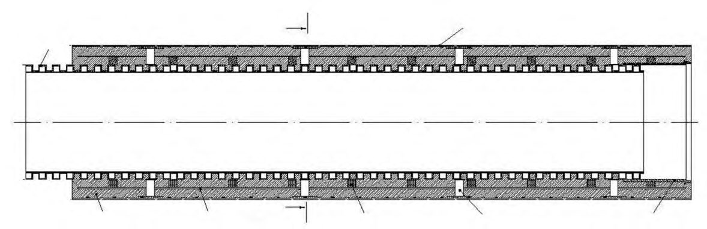
Г а - труба из полипропилена гофрированная; б - труба стальная (полиэтиленовая); в - труба стальная с тепловой изоляцией; г - стык труб с заливкой пенополиуретаном; 1 -гофрированная двухслойная полипропиленовая труба; 2 - металлополимерная оболочка; 3 - защитное бетонное покрытие; 4 - арматурный каркас; 5 - фиксатор арматурного каркаса; 6 - центрирующая опора; 7 - раструб; 8 - полиэтиленовая труба; 9 - эпоксидное покрытие; 10 - пенополиуретан; 11 - термоусадочная лента; 12 - оболочка; 13 - замок
Рисунок В.1 -Варианты труб с защитным бетонным покрытием в металлополимерной (стальной) оболочке
Приложение Г (обязательное) Классификация методов строительства подземных коммуникаций закрытым способом (бестраншейные технологии)
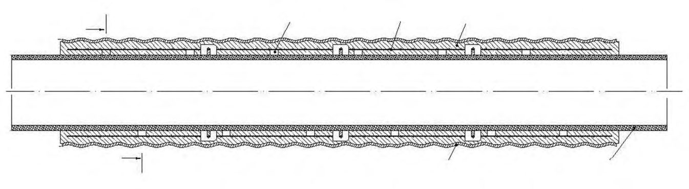
зом
Г.2 Термины, примененные в схеме классификации бестраншейных технологий (см. рисунок Г.1), и их определения
(1) непилотируемые технологии (unmanned techniques): См. раздел 3. (1.1) неуправляемые технологии (non-steerable techniques): См. раздел 3. (1.1.1) технологии с уплотнением грунта (soil displacement techniques): Непилотируемые неуправляемые бестраншейные технологии прокладки подземных коммуникаций, которые сопровождаются уплотнением окружающего грунта. (1.1.1.1) неуправляемый динамический прокол (soil displacement hammer): Непилотируемая неуправляемая бестраншейная технология прокладки подземных коммуникаций, выполняемая путем динамического (ударного или ударно-импульсного, с помощью пневмопробойников, пневмомолотов или гидромолотов) внедрения в грунт трубопровода с неуправляемым конусным наконечником, сопровождаемая уплотнением окружающего грунта (см. 7.3.4). (1.1.1.2) неуправляемый статический прокол (pipe ramming / pushing with closed pipe): Непилотируемая неуправляемая бестраншейная технология прокладки подземных коммуникаций, выполняемая путем статического (с помощью домкратов) внедрения в грунт трубопровода с неуправляемым конусным наконечником, сопровождаемая уплотнением окружающего грунта (см. 7.3.4). (1.1.1.3) неуправляемый прокол с расширением (horizontal jacking plant with expander): Непилотируемая неуправляемая бестраншейная двухэтапная технология прокладки подземных коммуникаций, выполняемая в такой последовательности: - статическое или динамическое внедрение в грунт штанг с неуправляемым конусным наконечником, - протягивание уширителя с прикрепленным к нему прокладываемым трубопроводом, сопровождаемое уплотнением окружающего грунта (см. 7.3.4). (1.1.1.4) неуправляемый прокол с разрывом (берстлайнинг) или разрезом (сплиттинг) (pipe bursting / pipe splitting): Непилотируемая неуправляемая бестраншейная технология прокладки подземных коммуникаций, при которой существующий трубопровод разрушается (разрывается или разрезается) вместе с окружающим его грунтом с помощью забиваемого или задавливаемого расширителя или ножа. Новый трубопровод протаскивается вслед за расширителем (ножом). Применяется, когда диаметр нового трубопровода такой же или больше диаметра ранее проложенного (см. 7.3.4). (soil removal techniques): Непилотируемые не-
(1.1.2) технологии с удалением грунта управляемые бестраншейные технологии прокладки подземных коммуникаций, которые сопровождаются удалением (извлечением) грунта.
СП ….1325800.2016 (1.1.2.1) внедрение открытой трубы (pipe ramming / pushing with open pipe): Непилотируемая неуправляемая бестраншейная технология прокладки подземных коммуникаций, при которой трубопровод с открытым концом внедряется в грунт с помощью домкратов или забивается в грунт. Грунтовая пробка в трубе разрабатывается и извлекается механически (выбуриванием или вручную), гидравлически или пневматически (сжатым воздухом), поэтапно, после проходки очередного участка трассы или проходки всей трассы. (1.1.2.2) шнековое бурение (auger boring): Непилотируемая неуправляемая бестраншейная технология прокладки подземных коммуникаций, при которой трубопровод задавливается в грунт с помощью домкратной станции с одновременной разработкой и извлечением грунта в забое с помощью буровой головки и шнека. (1.1.2.3) перебуривание (overdrilling): Непилотируемая и неуправляемая бестраншейная технология прокладки подземных коммуникаций, при которой существующий трубопровод извлекается одновременно с окружающим его грунтом с помощью буровой головки, прикрепленной к направляющему устройству. Грунт разрабатывается и извлекается с помощью шнека, гидравлически или пневматически. (1.1.3) реновация без разрушения (pipe burstingless renewal): Непилотируемые неуправляемые бестраншейные технологии прокладки (восстановления) подземных коммуникаций без разрушения старого трубопровода. (1.1.3.1) слиплайнинг (sliplining): Реновация трубопровода путем введения новой трубы методом протягивания или заталкивания в существующий трубопровод с заполнением кольцевого зазора между ними тампонажным раствором. (1.1.3.2) модифицированный слиплайнинг (modified sliplining): Слиплайнинг, при котором диаметр вводимой гибкой трубы уменьшается перед протягиванием или заталкиванием в ранее проложенную. Впоследствии диаметр вводимой трубы восстанавливается до первоначального, обеспечивая плотную пригонку к восстанавливаемой трубе, без образования зазора. Методы уменьшения диаметра: обжатие (предварительное протягивание трубы через горячие или холодные пресс-формы), придание U-образной формы и вытяжки. (1.1.3.3) метод гибкого рукава (flexible pipe sliplining): Реновация трубопровода, выполняемая в такой последовательности: - введение в ранее проложенный трубопровод гибкого полимерного рукава «чулка»; - наполнение «чулка» рабочей средой (горячей водой, горячим воздухом или горячим паром); - ожидание отвердения «чулка».
(1.1.3.4) нанесение покрытия (covering): Реновация трубопровода путем нанесения (как правило, центробежным набрызгом) покрытия (раствора, смолы и др.).
СП ….1325800.2016 (1.2) управляемые технологии (steerable techniques): См. раздел 3. (1.2.1) микротоннелирование (microtunnelling): Непилотируемые управляемые бестраншейные технологии прокладки подземных коммуникаций путем задавливания трубопровода с помощью домкратов и расположенной впереди трубопровода управляемой дистанционно (в автоматическом режиме) проходческой машины, позволяющей одновременно с задавливанием выполнять разработку и извлечение грунта в забое и обеспечивать его пригруз. Сборка и наращивание трубопровода осуществляются в стартовом котловане (шахтном стволе) путем пристыковки дополнительных секций труб (см. 7.3.2). (1.2.1.1) микротоннелирование с шнековым транспортированием грунта (microtunnelling with auger spoil removal): Микротоннелирование, при котором транспортирование разработанного грунта из забоя выполняется с помощью шнека, расположенного в отдельной вспомогательной трубе, расположенной внутри прокладываемого трубопровода. (1.2.1.2) микротоннелирование с гидротранспортированием грунта (slurry shield microtunnelling): Микротоннелирование, при котором транспортирование разработанного грунта из забоя выполняется с помощью гидротранспорта, путем транспортирования жидкого шлама по вспомогательному трубопроводу, расположенному внутри прокладываемого трубопровода. (1.2.1.3) микротоннелирование с гидротранспортированием грунта и пневмопригрузом (slurry shield microtunnelling with compressed air cushion): Микротоннелирование, при котором разработанный грунт (жидкий шлам) транспортируют из забоя с помощью гидротранспорта по вспомогательному трубопроводу, расположенному внутри прокладываемого трубопровода, с пригрузом забоя сжатым воздухом. (1.2.1.4) микротоннелирование с гидротранспортированием грунта и грунтопригрузом (microtunnelling with muck conveyance and earth pressure balance / EPB shield): Микротоннелирование, при котором разработанный грунт (жидкий шлам) транспортируют из забоя с помощью гидротранспорта по вспомогательному трубопроводу, расположенному внутри прокладываемого трубопровода, с пригрузом забоя с помощью измельченного грунта, при необходимости, модифицированного специальными добавками. (1.2.1.5) микротоннелирование с удалением ранее проложенной трубы (pipe-eating): Микротоннелирование, при котором ранее проложенный трубопровод извлекается одновременно с окружающим грунтом. При этой технологии ранее проложенный трубопровод и его фундамент (основание) должны быть способны разрушаться при микротоннелировании. (1.2.2) технологии вдавливания (pilot pipe jacking): Непилотируемые управляемые бестраншейные технологии прокладки подземных коммуникаций, при которых внедрение трубо- провода сопровождается удалением или уплотнением окружающего грунта.
- (1.2.2.1) управляемый прокол (pilot pipe jacking with soil displacement): Непилотируемая управляемая бестраншейная трехэтапная технология прокладки подземных коммуникаций, выполняемая в такой последовательности:
- прокол пионерной скважины по заданной проектом трассе путем внедрения в грунт штанги с управляемым наконечником, сопровождаемый уплотнением окружающего грунта;
- однократное или многократное поэтапное расширение скважины до образования рабочего канала, позволяющего протягивать трубопровод проектного диаметра;
- протягивание трубопровода (см. 7.3.4).
- (1.2.2.2) управляемое вдавливание с выбуриванием грунта (pilot pipe jacking with soil removal): Непилотируемая управляемая двухэтапная бестраншейная технология (модификация шнекового бурения) прокладки подземных коммуникаций, выполняемая в такой последовательности:
- устройство пионерной скважины по заданной проектом трассе путем внедрения в грунт штанг (вспомогательного трубопровода) с управляемым наконечником, сопровождаемое выбуриванием или уплотнением окружающего грунта;
- задавливание в грунт по пионерной скважине основного трубопровода с помощью домкратной станции с одновременной разработкой и извлечением грунта из забоя с помощью шнека.
- (1.2.2.3) метод раскатки (rolling techniques): Непилотируемая управляемая бестраншейная технология прокладки подземных коммуникаций, выполняемая в такой последовательности:
- проходка в грунте скважины путем уплотнения грунта раскатывающим механизмом (раскатчиком, включающим в себя группу цилиндрических и конических катков, установленных с помощью подшипников на валу), прикрепленным к штангам;
- после завершения проходки скважины раскатчик отсоединяется от штанг и вместо него присоединяются раскатчик-расширитель и трубопровод;
- штанги с раскатчиком-расширителем и трубопроводом затягиваются обратно в скважину.
- (1.2.3) горизонтальное направленное бурение; ГНБ (horizontal directional drilling / HDD): Непилотируемая управляемая бестраншейная трехэтапная технология прокладки подземных коммуникаций, выполняемая в такой последовательности:
- бурение пилотной скважины по заданной проектом трассе;
- однократное или многократное расширение скважины до образования бурового канала, позволяющего протягивать трубопровод (трубопроводы) проектного диаметра;
- протягивание трубопровода (трубопроводов): См. 7.3.3.
СП ….1325800.2016
(1.2.4) плужный метод (plough techniques): Непилотируемая управляемая бестраншейная технология прокладки подземных коммуникаций, при которой укладка плети трубопровода или кабеля (должны поставляться, как правило, в бухтах) выполняется в прорезаемую в грунте с помощью плуга щель, при этом плуг прикреплен к самоходному или буксируемому механизму (трубозаглубителю), движущемуся по поверхности земли. (1.2.5) комбинированные технологии (steerable combined techniques): Непилотируемые управляемые бестраншейные двухэтапные технологии прокладки подземных коммуникаций, осуществляемые путем последовательного выполнения двух и более простых технологий, причем одна из технологий является управляемой. (1.2.5.1) микротоннелирование с пилотной скважиной (microtunnelling with the pilot hole): Микротоннелирование с предварительной проходкой (бурением или продавливанием) пионерной скважины, выполняемой по одной из беспилотных технологий (управляемой или неуправляемой). (1.2.5.2) горизонтальное направленное бурение щитом (direct pipe): - непилотируемая управляемая бестраншейная технология прокладки подземных коммуникаций путем задавливания предварительно собранного и сваренного по стыкам стального трубопровода с помощью расположенной впереди и пристыкованной к нему управляемой дистанционно (в автоматическом режиме) проходческой машины, позволяющей одновременно с задавливанием выполнять разработку и извлечение грунта в забое и обеспечивать его пригруз. Усилие, необходимое для проходки, создает доталкиватель труб, расположенный в непосредственной близости от точки входа трубопровода (на поверхности или в приямке). Технология - гибридный вариант горизонтального направленного бурения и микротоннелирования. (2) пилотируемые технологии (unmanned techniques): См. раздел 3. (2.1) управляемые технологии (steerable techniques): См. раздел 3. (2.1.1) щитовая проходка (щитовое тоннелирование) (shield-driven tunneling): Пилотируемая управляемая бестраншейная технология прокладки подземных коммуникаций путем проходки тоннеля и возведения его обделки с помощью тоннелепроходческого комплекса, выполненного на базе передвижной временной крепи с головной частью в виде щитовой машины, управляемой находящимся внутри нее персоналом и позволяющего выполнять разработку и удаление грунта, крепление забоя и возведение обделки. Щитовая проходка осуществляется путем циклического последовательного повторения трех основных операций: - разработка грунта в забое;
- передвижение щита с помощью гидродомкратов;
- возведение обделки (см. 7.3.1).
(2.1.1.1) проходка щитом с открытым забоем, частичной разработкой забоя без его поддержки или частичной механической поддержкой (shield-driven tunnelling by open shield with partial face excavation without support or with mechanical partial support): См. 7.3.1. (2.1.1.2) проходка щитом с открытым забоем, частичной разработкой забоя без его поддержки или частичной механической поддержкой забоя, с нагнетанием сжатого воздуха в забой (shield-driven tunnelling by open shield with partial face excavation without support or with mechanical partial support by compressed air pressurisation of the working face): См. 7.3.1. (2.1.1.3) проходка щитом с открытым забоем, полной разработкой забоя, частичной механической поддержкой забоя, без или с нагнетанием сжатого воздуха в забой (shielddriven tunnelling by open shield with full face excavation with mechanical partial support without or by compressed air pressurisation of the working face): См. 7.3.1. (2.1.1.4) проходка щитом с закрытым забоем, полной разработкой забоя, гидро и (или) пневмопригрузом (shield-driven tunnelling by closed shield with full face excavation and fluid support and (or) compressed air / mixshield): См. 7.3.1. (2.1.1.5) Проходка щитом с закрытым забоем, полной разработкой забоя, грунтопригрузом (shield-driven tunnelling by closed shield with full face excavation and earth pressure balance / EPB shield): См. 7.3.1. (2.1.2) горный способ (rock tunnelling): Пилотируемая управляемая бестраншейная технология прокладки подземных коммуникаций путем последовательной разработки сечения забоя (одновременно всего сечения или по частям), возведения временной непередвижной крепи (или без нее) и последующего возведения постоянной обделки из монолитного бетона, набрызгбетона или сборных железобетонных элементов (с последующим нагнетанием между сборной обделкой и грунтом тампонажного раствора).
ДПриложение Д (рекомендуемое). Область применения тоннелепроходческого механизированного комплекса с активным пригрузом забоя в зависимости от инженерно-геологических условий
В таблице Д.1 приведены ориентировочные области применения ТПМК с активным пригрузом забоя в различных инженерно-геологических и гидрогеологических условиях
Таблица Д.1
| Области применения ТПМК для инженерно-геологических и гидрогеологических условий | Области применения ТПМК для инженерно-геологических и гидрогеологических условий | Области применения ТПМК для инженерно-геологических и гидрогеологических условий | Области применения ТПМК для инженерно-геологических и гидрогеологических условий | Области применения ТПМК для инженерно-геологических и гидрогеологических условий | Области применения ТПМК для инженерно-геологических и гидрогеологических условий | |
|---|---|---|---|---|---|---|
| Скальные грунты | Скальные грунты | Полускальные и нескальные грунты | Полускальные и нескальные грунты | Полускальные и нескальные грунты | Полускальные и нескальные грунты | |
| ненару- шенной структуры, прочные | нарушенной структуры, средней прочности и малопроч- ные | связные, устойчи- вые | связные, неустойчи- вые | смешанные | несвязные (сыпучие) | |
| С суспензионным пригрузом | 1 | |||||
| С суспензионным пригрузом | 2 | |||||
| С грунтовым при- грузом | 1 | |||||
| С грунтовым при- грузом | 2 | |||||
| С пневмопригру- зом | 1 | |||||
| С пневмопригру- зом | 2 | |||||
| С комбинирован- ным пригрузом | 1 | |||||
| С комбинирован- ным пригрузом | 2 |
- область основного применения;
- область возможного применения;
1 - неводонасыщенный грунт;
2 - водонасыщенный грунт.
ЕПриложение Е. (рекомендуемое)
Выбор размеров расчетной области и геомеханической модели грунта
Е.1 Для предварительной оценки влияния строительства при моделировании (выполнении расчетов в плоской постановке) проходки открытых и закрытых выработок с применением идеально упруго-пластической модели грунта ширину и глубину расчетной области (рисунок Е.1, а, б) допускается принимать по таблицам Е.1 и Е.2.
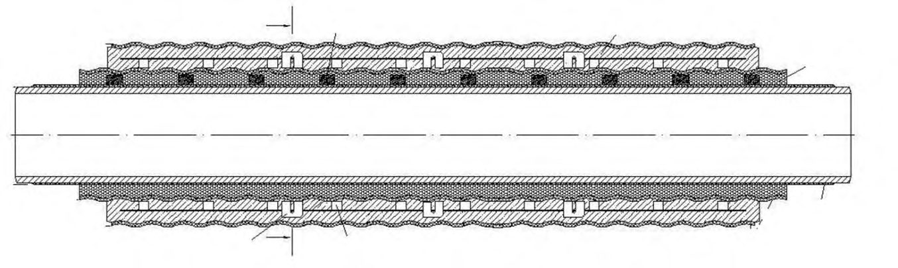
Рисунок Е.1 -Схемы для выбора размеров расчетной области модели при выполнении оценки влияния строительства закрытой а) и открытой б) выработок
СП ….1325800.2016 Таблица Е.1 - Ширина расчетной области при моделировании строительства открытых и закрытых выработок
| Тип нагрузок и воздействий | Рекомендуемое значение ширины расчетной об- ласти модели a , м | Рекомендуемое значение ширины расчетной об- ласти модели a , м |
|---|---|---|
| Песчаные грунты | Глинистые грунты | |
| Устройство закрытой выработки | a 3 Н t | a 6 Н t |
| Устройство открытой выработки | а 3 Н s | а 6 Н s |
Таблица Е.2 - Глубина расчетной области при моделировании строительства открытых и закрытых выработок
| Тип нагрузок и воздействий | Рекомендуемое значение глубины расчетной обла- сти модели b , м |
|---|---|
| Устройство закрытой выработки | b = 0,5 D s |
| Устройство открытой выработки | b = H rs + 0,5 при H с ≤ H rs + 0,5 b = H с при H с > H rs + 0,5 |
Примечания
1 H с - глубина сжимаемой толщи основания условного фундамента, подошва которого расположена в уровне низа открытой выработки. Ширина условного фундамента принимается равной ширине открытой выработки. Нагрузка по подошве условного фундамента принимается равной весу вынутого из открытой выработки грунта. H с рассчитывается согласно СП 22.13330, при этом применяется модуль деформации Ee по ветви вторичного нагружения.
2 Hrs - глубина заложения ограждений открытой выработки.
Е.2 При моделировании строительства открытых и закрытых выработок модель грунта должна адекватно отражать поведение грунтового массива под нагрузкой и воздействиями. Ее следует принимать на основе опыта сопоставления результатов прогнозных расчетов и данных мониторинга. Для моделирования допускается применять модели грунта согласно таблице Е.3.
Примечание - При применении упруго-пластической модели грунта с упрочнением следует:
- включать испытания грунтов, требуемые для определения параметров модели, в программу инженерногеологических изысканий (при отсутствии норм на определение требуемых параметров, в программу необходимо включать методики их определения);
- выполнять верификацию и оптимизацию параметров модели путем:
- сравнения паспортов лабораторных и (или) полевых испытаний грунтов, с результатами аналогичных численных испытаний соответствующих инженерно-геологических элементов;
- выполнения тестовых расчетов с привлечением результатов геотехнического мониторинга построенных участков подземных коммуникаций на данном объекте.
Таблица Е.3 - Геомеханические модели грунта при моделировании строительства открытых и закрытых выработок
| Тип нагрузок и воздействий | Рекомендуемая геомеханическая модель грунта |
|---|---|
| Устройство закрытой выработки | Идеально упруго-пластическая модель c применением модуля деформации по ветви первичного нагружения (области сжатия) и разгрузки (области растяжения). Упруго-пластическая модель с упрочнением |
| Устройство открытой выработки | Идеально упруго-пластическая модель c применением модуля деформации по ветви первичного нагружения (области сжатия) и разгрузки (области растяжения). Упруго-пластическая модель с упрочнением |
ЖПриложение Ж. (рекомендуемое)
Выбор значений перебора грунта при моделировании закрытой проходки
Ж.1 При выборе значения перебора следует учитывать, что он существенно зависит от вида разрабатываемого грунта, технологии проходки (в том числе нагнетания тампонажного раствора в заобделочное пространство) и опыта проходческой организации.
Ж.2 Для предварительной оценки влияния при проходке ТПМК с активным пригрузом забоя перебор грунта VL допускается принимать согласно таблице Ж.1.
Таблица Ж.1 - Перебор грунта VL , %
| Грунт, разрабатываемый в забое щита | Грунт, разрабатываемый в забое щита | Грунт, разрабатываемый в забое щита |
|---|---|---|
| песок средний, водонасы- щенный | песок мелкий и пылеватый, водонасыщенный | суглинок тугопластичный, гли- на полутвердая |
| ТПМК со сборной обделкой при нагнетании тампонажного раствора в заобделочное про- странство через отверстия в хвостовой части оболочки щита одновременно с его продвиже- нием или ТПМК с пресс-бетонной обделкой | ТПМК со сборной обделкой при нагнетании тампонажного раствора в заобделочное про- странство через отверстия в хвостовой части оболочки щита одновременно с его продвиже- нием или ТПМК с пресс-бетонной обделкой | ТПМК со сборной обделкой при нагнетании тампонажного раствора в заобделочное про- странство через отверстия в хвостовой части оболочки щита одновременно с его продвиже- нием или ТПМК с пресс-бетонной обделкой |
| 5,5 | 3,5 | 1,5 |
| ТПМК со сборной обделкой при нагнетании тампонажного раствора в заобделочное про- странство после продвижения щита, через отверстия в блоках обделки | ТПМК со сборной обделкой при нагнетании тампонажного раствора в заобделочное про- странство после продвижения щита, через отверстия в блоках обделки | ТПМК со сборной обделкой при нагнетании тампонажного раствора в заобделочное про- странство после продвижения щита, через отверстия в блоках обделки |
| - | 5,5 | 2,5 |
Ж.3 Для предварительной оценки влияния прокладки подземных коммуникаций с применением МТПК и ГНБ перебор грунта VL , %, допускается принимать по формуле
где kL - степень заполнения грунтом кольцевого зазора между прокладываемой коммуникацией и контуром образуемой выработки (для МТПК следует принимать kL = 40 % - 80 %, для ГНБ kL = 20 % - 40 %); A площадь поперечного сечения прокладываемой подземной коммуникации, м² ; AS - площадь поперечного сечения закрытой выработки, м² .
ИПриложение И (обязательное). Расчет подземных коммуникаций, расположенных в зоне влияния строительства
И.1 Ранее проложенные подземные коммуникации, расположенные в зоне влияния строительства, рассчитываются по двум группам предельных состояний: I - по несущей способности и II - по деформациям. Предельные состояния подземных коммуникаций, требующие поверочных расчетов на конкретном объекте, выбираются согласно таблице 6.1 с учетом назначения коммуникаций, принципа транспортирования, материала и характера стыковых соединений.
Примечания
1 Проверка прочности поперечных (кольцевых) сечений конструкций подземных коммуникаций [предельное состояние (I.2), таблица 6.1] 1 должна выполняться при возникновении нагрузок и воздействий, направленных на подземные коммуникации (строительство над коммуникацией сооружения, устройство насыпи и др.).
2 Проверка образования продольных трещин [предельное состояние (II.3.а)] и расчет их ширины раскрытия [предельное состояние (II.4.а)] в конструкциях подземных коммуникаций должны выполняться для бетонных, железобетонных и фибробетонных конструкций при возникновении нагрузок и воздействий, направленных на подземные коммуникации (строительство над коммуникацией сооружения, устройство насыпи и др.).
И.2 Расчет существующих подземных коммуникаций по предельным состояниям допускается не выполнять [кроме предельного состояния (I.3)], если максимальные дополнительные перемещения подземных коммуникаций не превышают:
4 мм - независимо от состояния (кроме аварийного) подземных коммуникаций;
10 мм - для подземных коммуникаций (кроме газопроводов) диаметром менее 0,5 м, находящихся в удовлетворительном состоянии (при отсутствии данных о состоянии коммуникации срок ее эксплуатации не должен превышать 20 лет).
И.3 (I.1) Проверка прочности конструкций подземных трубопроводов на максимальные продольные напряжения выполняется в результате проверки условий:
- для стальных конструкций
где 𝜎 п - продольное осевое растягивающее напряжение в конструкциях коммуникации от расчетных нагрузок и воздействий, МПа, определяемое с учетом настоящего приложения; 𝑅с = min {𝑅𝑢; 𝑅𝑦} - расчетное сопротивление материала (стали) труб и соединительных деталей, МПа, 𝑅𝑢 = 𝑅𝑢𝑛 𝛾 𝑐 𝛾𝑚𝑢 𝛾𝑛 𝛾 𝑡𝑢 , 𝑅𝑦 = 𝑅𝑦𝑛 𝛾 𝑐 𝛾𝑚𝑦 𝛾𝑛 𝛾 𝑡𝑦 ; 𝑅𝑢𝑛 и 𝑅𝑦𝑛 - расчетные сопротивления материала труб и соединительных деталей по временному сопротивлению и пределу текучести соответственно, МПа; 𝛾𝑐 - коэффициент условий работы, учитывающий характер транспортируемой среды; 𝛾𝑚𝑢
1 Здесь и далее по тексту приложения И форма записи групп предельных состояний типа (I. n ), (II. n ) соответствуют боковику таблицы 6.1. Виды проверочного расчета выделены курсивом.
СП ….1325800.2016 и 𝛾𝑚𝑦 - коэффициенты надежности по материалу; 𝛾𝑛 - коэффициент надежности по ответственности коммуникации; 𝛾𝑡𝑢 и 𝛾𝑡𝑦 - поправочные коэффициенты надежности по материалу, учитывающие расчетную температуру эксплуатации трубопровода; 𝛾𝑐𝑡 - коэффициент условий работы, учитывающий возможные перемещения и деформации трубопровода, полученные в период его эксплуатации, до начала строительства проектируемого объекта; при расположении трубопровода в плотной городской застройке и времени его эксплуатации: менее 10 лет 𝛾𝑐𝑡 = 0,9 , от 10 до 20 лет 𝛾𝑐𝑡 = 0,85 , более 20 лет 𝛾𝑐𝑡 = 0,8 ; при отсутствии вблизи трубопровода действующих зданий и сооружений, строительство или эксплуатация которых способны были бы негативно сказаться на техническом состоянии трубопровода, 𝛾𝑐𝑡 = 0,9 .
Примечание - Значения 𝑅𝑢𝑛 , 𝑅𝑦𝑛 , 𝛾𝑐 , 𝛾𝑚𝑢 , 𝛾𝑚𝑦 , 𝛾𝑛 , 𝛾𝑡𝑢 , 𝛾𝑡𝑦 следует принимать по СП 33.13330, СП 36.13330, стандартам и техническим условиям на трубы;
- для полимерных конструкций
где 𝑅п = 𝑀𝑅𝑆 𝛾𝑐 𝛾𝑚 𝛾𝑛 - расчетная прочность материала (полимера) труб и соединительных деталей, МПа; 𝑀𝑅𝑆 - минимальная длительная прочность материала труб и соединительных деталей, МПа; 𝛾𝑚 - коэффициент надежности по материалу; 𝛾𝑐 - коэффициент условий работы; 𝜎 п и 𝛾𝑐𝑡 - то же, что и в формуле (И.1).
Механические характеристики и геометрические параметры подземных коммуникаций (трубопроводов) при выполнении расчетов принимаются по данным служб эксплуатации коммуникаций и (или) результатам их обследования. При отсутствии данных о фактической толщине стенки стальных трубопроводов (кроме магистральных нефте- и газопроводов) толщину стенки трубопровода допускается принимать с учетом скорости его коррозии, приведенной в таблице И.1, взятой с коэффициентом, равным при уровне ответственности трубопровода: пониженном - 1,0; нормальном - 1,1; повышенном - 1,2.
Примечание - Значения 𝑀𝑅𝑆 , 𝛾𝑐 , 𝛾𝑚 , 𝛾𝑛 следует принимать согласно действующим строительным нормам и правилам на проектирование коммуникаций соответствующего вида, стандартам и техническим условиям на трубы.
Таблица И.1 - Скорость коррозии и истирания стенки стального трубопровода
| Назначение трубопровода | Скорость коррозии и абразивного износа стенки стального трубопровода, мм/год |
|---|---|
| Газопровод | 0,12 |
| Напорная канализация | 0,15 |
| Водопровод с горячей водой | 0,10 |
| Водопровод с холодной водой | 0,05 |
| Теплосеть | 0,13 |
| Нефтепродуктопровод: - автомобильный бензин | 0,001-0,005 |
|---|---|
| - дизельное топливо, авиационное топливо | 0,01-0,05 |
И.4 (I.2) Проверка прочности поперечных конструкций подземных трубопроводов на максимальные кольцевые напряжения выполняется в соответствии с нормами на проектирование конструкций соответствующего вида путем проверки условия
где 𝐹 - усилие от нагрузок и воздействий в рассматриваемом сечении; 𝐹𝑢𝑙𝑡 - предельное усилие, которое может быть воспринято конструкцией.
И.5 (I.3) Проверка потери устойчивости положения конструкций подземных коммуникаций в результате потери устойчивости вмещающего их массива грунта выполняется в соответствии с СП 116.13330.
И.6 (II.1) Проверка условия самотечности конструкций подземных коммуникаций
Условие самотечности коммуникации обеспечено, если на участках, где строительство вызывает уменьшение наклона, выполняется следующее условие
где 𝑖ф - значение фактического уклона коммуникации на рассматриваемом участке, определяемое по отметкам лотков колодцев; 𝑖 y = 𝑠𝑚 - 𝑠𝑚-1 /∆𝑥 - значение расчетного уклона коммуникации в вертикальной плоскости на рассматриваемом участке; 𝑠𝑚 и 𝑠𝑚-1 - значения вертикальных перемещений в точках 𝑚 и 𝑚-1 соответственно, мм; ∆𝑥 -длина интервала между точками 𝑚 и 𝑚-1 , мм; 𝑖min - минимально допустимые уклоны подземных коммуникаций; принимаются согласно действующим нормативным документам на проектирование коммуникаций соответствующего вида.
И.7 (II.2) Проверка герметичности стыковых соединений сборных конструкций подземных коммуникаций выполняется проверкой условия
где ∆𝑙im - допускаемая осевая компенсационная способность податливого стыкового соединения труб, мм, принимается согласно действующим строительным нормам и правилам на проектирование коммуникаций соответствующего вида, стандартам и техническим условиям (техническим паспортам предприятий-изготовителей труб) на трубы; ∆𝑘= + - осевое раскрытие стыка в результате продольных деформаций грунта и изгиба коммуникации, мм; = 𝑙𝑠𝑒𝑐 - осевое раскрытие стыка в результате продольных деформаций грунта, мм; 𝑙 𝑠𝑒𝑐 - длина секции
СП ….1325800.2016 коммуникации, мм; = 𝑢𝑚 - 𝑢𝑚-1 /∆𝑥 - значение относительного осевого горизонтального перемещения коммуникации (грунта вдоль оси трубопровода); 𝑢𝑚 и 𝑢𝑚-1 -значения горизонтальных осевых перемещений в точках 𝑚 и 𝑚-1 соответственно, мм; = 𝑙𝑠𝑒𝑐 𝐷 н 𝜌 / - осевое раскрытие стыка в результате изгиба коммуникации, мм; 𝐷 н - наружный диаметр коммуникации, мм; ρ = 1 𝐾 / ≈ 1 √𝐾𝑦 2 +𝐾𝑧 2 / - общий радиус кривизны изгиба коммуникации в пространстве, мм, учитывающий вертикальные и горизонтальные поперечные деформации; 𝜌𝑦 = 1 /𝐾𝑦 = ∆𝑥ср 𝑖𝑦 𝑛 -𝑖𝑦 𝑛-1 / - радиус кривизны в вертикальной плоскости, мм; 𝐾𝑦 - кривизна в вертикальной плоскости, 1/мм; 𝑖𝑦 𝑛 и 𝑖𝑦 𝑛-1 - значения наклонов 𝑛 и 𝑛 - 1 интервалов в вертикальной плоскости соответственно; ∆𝑥ср - длина секций труб, мм; 𝜌𝑧 = 1 /𝐾𝑧 = ∆𝑥ср 𝑖 𝑧 𝑛 -𝑖𝑧 𝑛-1 / - радиус кривизны в горизонтальной плоскости, мм; 𝐾𝑧 - кривизна в горизонтальной плоскости, 1/мм; 𝑖 𝑧 𝑛 и 𝑖 𝑧 𝑛-1 - значения наклонов 𝑛 и 𝑛 - 1 интервалов в горизонтальной плоскости соответственно; 𝑖𝑧 = 𝑚 - 𝑚-1 /∆𝑥 - наклон участков в горизонтальной плоскости, где 𝑚 и 𝑚-1 -значения горизонтальных поперечных перемещений в точках 𝑚 и 𝑚-1 соответственно, мм; ∆с - значение оставляемого при строительстве зазора между концами труб в стыке, мм, принимаемое в размере не менее 20 % значения ∆𝑙im .
И.8 Проверка образования продольных (II.3.а) и поперечных (II.3.б) трещин в конструкциях подземных коммуникаций выполняется в соответствии с действующими строительными нормами и правилами на проектирование конструкций соответствующего вида путем проверки условия
где 𝐹 - усилие от нагрузок и воздействий в рассматриваемом сечении; 𝐹𝑐𝑟𝑐,𝑢𝑙𝑡 - предельное усилие, которое может быть воспринято конструкцией без образования трещин.
И.9 Расчет ширины раскрытия продольных (II.4.а) и поперечных (II.4.б) трещин в конструкциях подземных коммуникаций выполняется в соответствии с нормами на проектирование конструкций соответствующего вида путем проверки условия
где 𝑎𝑐𝑟𝑐 - ширина раскрытия трещин от нагрузок и воздействий, мм; 𝑎𝑐𝑟𝑐,𝑢𝑙𝑡 - предельное значение ширины раскрытия трещин, мм.
И.10 Все расчеты подземных коммуникаций должны проводиться на расчетные значения нагрузок, которые определяют путем умножения нормативных значений на соответствующий коэффициент надежности по нагрузке.
И.11 При расчете подземных коммуникаций следует учитывать как основные (эксплуатационные), так и дополнительные (вызванные новым строительством) нагрузки и воздействия.
К основным относятся нагрузки и воздействия, возникающие на стадии эксплуатации подземных коммуникаций, до начала строительства проектируемых коммуникаций, влияние от которых оценивается. В качестве основных нагрузок и воздействий необходимо рассматривать внутреннее давление транспортируемой жидкости или газа, температурный перепад в стенках подземных коммуникаций и давление грунта.
К дополнительным относятся нагрузки и воздействия, возникающие после начала строительства проектируемых коммуникаций, влияние от которых оценивается. В качестве дополнительных нагрузок и воздействий необходимо рассматривать вертикальные и горизонтальные смещения и деформации грунта, а также увеличение давления грунта на коммуникации в результате строительных работ.
И.12 При расчете подземных коммуникаций по предельным состояниям продольные осевые растягивающие напряжения 𝜎п в конструкциях коммуникаций от расчетных нагрузок и воздействий следует определять по формуле
где 𝜎п,п - растягивающие напряжения от вертикальных и горизонтальных перемещений грунта, перпендикулярных к боковой поверхности коммуникации, МПа; для коммуникаций с кольцевым сечением допускается принимать 𝜎п,п = 𝐸𝐷 н /2𝜌 ; 𝐸 - модуль упругости материала коммуникации, МПа; 𝐷 н - наружный диаметр коммуникации, м; 𝜌 - то же, что и в формуле (И.5), м; 𝜎п,о - растягивающие напряжения от перемещений грунта вдоль боковой поверхности коммуникации, МПа, допускается рассчитывать исходя из билинейной зависимости (упругопластической контактной модели) между сопротивлениями и перемещениями грунта вдоль боковой поверхности коммуникации; 𝜎п,д - растягивающие напряжения от внутреннего давления транспортируемой среды в коммуникации, МПа; 𝜎п,𝑡 - растягивающие напряжения от температурного перепада в стенках коммуникации, МПа.
Продольные осевые напряжения от внутреннего давления транспортируемой жидкости (газа), температурного перепада коммуникаций могут быть учтены одним из двух способов: первый - совместно с влиянием перемещений и деформаций грунтового массива, в рамках численного моделирования в комплексе с другими нагрузками и воздействиями; второй - раздельно, путем выполнения отдельных расчетов - в этом случае суммарные продольные осевые напряжения рассчитываются по принципу суперпозиции.
Для прямолинейных коммуникаций (трубопроводов) максимальные продольные осевые напряжения от внутреннего давления в коммуникациях круглого сечения определяются по формуле
СП ….1325800.2016 где 𝑝 n - внутреннее давление в коммуникации от транспортируемой среды, МПа; 𝐷в - внутренний диаметр коммуникации, м; δ - толщина стенки коммуникации; - коэффициент Пуассона.
Для прямолинейных коммуникаций (трубопроводов) максимальные продольные осевые напряжения от температурного перепада определяются по формуле
где 𝛼 - температурный коэффициент линейного расширения материала коммуникации, 1/° С ; 𝐸 - модуль упругости материала коммуникации, МПа; ∆𝑡 = 𝑡гр -𝑡э - температурный перепад коммуникации во времени, °С, принимаемый положительным при нагревании, где 𝑡 гр - наиболее низкая среднемесячная температура окружающего грунта, °С, принимается на основе данных многолетних наблюдений; 𝑡 э - температура трубопровода в период эксплуатации, °С, принимается по данным служб эксплуатации коммуникаций или соответствующим нормам на их проектирование.
Примечание - Для подземных коммуникаций с температурными компенсаторами, а также в случае, если коммуникации могут свободно перемещаться в продольном и поперечном направлениях, осевые напряжения от температурного перепада допускается не учитывать.
КПриложение К. (рекомендуемое)
Прогноз продолжительности осадок земной поверхности над тоннелем
При прогнозировании работ по геотехническому мониторингу продолжительность осадок земной поверхности над тоннелем T, сут, выполняемым закрытым способом, следует оценивать по формуле
,
где γ T - коэффициент условия работы, определяемый по таблице К.1, в зависимости от коэффициента связности K с = Σ h c / H толщи грунта над тоннелем; Σ hc - суммарная толщина слоев связных грунтов над тоннелем, м; H - расстояние между земной поверхностью и верхом тоннеля, м; VT - скорость продвижения забоя щита, м/сут.
Примечание - При расчетах к связным грунтам следует относить одноименные грунты по ГОСТ 25100, за исключением грунтов с показателем текучести IL для: глин и суглинков - больше 0,75; супесей и других связных грунтов - больше 1.
Таблица К.1 - Коэффициент условия работы γ T в зависимости от коэффициента связности толщи грунта над тоннелем K с
| K с | 0 | 0,1 | 0,2 | 0,3 | 0,4 | 0,5 | 0,6 | 0,7 | 0,8 | 0,9 | 1 |
|---|---|---|---|---|---|---|---|---|---|---|---|
| γ T | 3,1 | 3,2 | 3,3 | 3,7 | 4,3 | 5,4 | 7,7 | 11,9 | 20,0 | 35,7 | 65,7 |
Приложение Л (рекомендуемое)
Мероприятия по снижению деформаций грунта на участках выводов и вводов щитов в шахтные стволы и котлованы
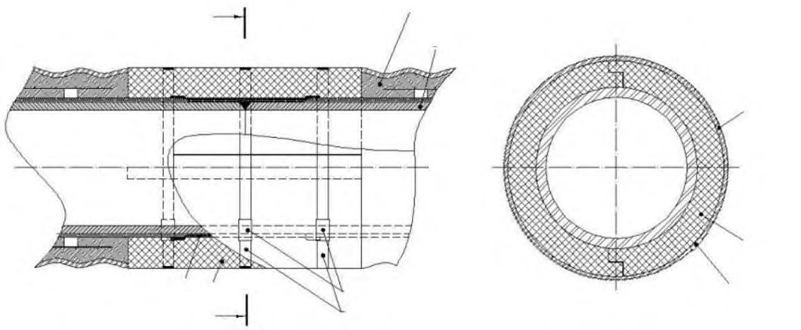
а - метод химического закрепления грунта; б - метод струйной цементации; в - метод замораживания грунтов; г - метод вырезания специальной стенки; 1 - бетонное обрамление выхода; 2 - выходное уплотнение; 3 - закрепленная зона; 4 - зона замещенного грунта; 5 -замораживающие трубы; 6 - зона замороженного грунта
Рисунок Л.1 -Мероприятия по снижению деформаций грунта на участках выводов щитов из шахтных стволов и котлованов а - метод химического закрепления грунта; б - метод струйной цементации; в - метод замораживания грунтов; г - метод вырезания стенки; д - метод перемычки в шахте; е - плавающий метод; 1 - бетонное обрамление выхода; 2 - выходное уплотнение; 3 - закрепленная зона; 4 - зона замещенного грунта; 5 - замораживающие трубы; 6 - зона замороженного грунта; 7 - входная рама; 8 - глинистая паста; 9 - опора
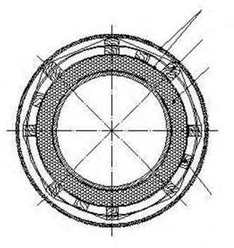
Рисунок Л.2 -Мероприятия по снижению деформаций грунта на участках вводов щитов в шахтные стволы и котлованы
МПриложение М. (рекомендуемое)
Мероприятия по снижению технологических воздействий на окружающую застройку при строительстве подземных коммуникаций открытым способом и выполнении защитных мер
Для снижения технологических воздействий на окружающую застройку при строительстве подземных коммуникаций открытым способом и выполнении защитных мер необходимо обеспечивать выполнение положений М.1-М.14.
М.1 Контроль за выполнением требований проекта (технологического регламента) и качеством выполнения работ в части обеспечения щадящей технологии строительных работ, должен осуществляться инженерно-технической службой производителя работ, проверяться представителями авторского надзора и технического надзора заказчика.
М.2 Технология строительных работ должна проверяться и отрабатываться перед началом основных работ на опытном участке непосредственно на объекте строительства или участке с идентичными инженерно-геологическими условиями. Окончательное решение о выборе технологии выполнения работ должно приниматься представителями авторского надзора с учетом результатов проводимого в период указанных опытных работ геотехнического мониторинга.
М.3 Строительные работы на протяженных участках должны выполняться захватками.
М.4 В период выполнения защитных мероприятий должен выполняться геотехнический мониторинг защищаемых сооружений. Его результаты следует передавать представителям организаций, ответственных за обеспечение сохранности сооружений, в том числе представителям авторского надзора.
М.5 При выполнении строительных работ, если это указано в проекте или требуется согласно действующим нормам, следует оценивать допустимость вибродинамических воздействий.
М.6 При выполнении строительных работ бурение лидерных скважин не допускается, за исключением случаев, когда грунтовые условия участка позволяют надежно обеспечивать устойчивость стенок скважин. Разрешение на устройство лидерных скважин может выдаваться только представителями авторского надзора на основе работ на опытном участке.
М.7 Бурение скважин в фундаментах защищаемого сооружения следует выполнять станками алмазного бурения с извлечением выбуренного керна, позволяющими минимизировать динамические воздействия на конструкции защищаемых сооружений.
М.8 Бурение скважин вблизи сооружений окружающей застройки следует выполнять только с применением инвентарных обсадных труб. При работе буровых станков на расстоянии менее 5 м от этих сооружений, а также наличии в их основании слабых или структурнонеустойчивых грунтов, безопасность применяемых режимов бурения по их динамичности должна определяться по результатам оценки допустимости фактических амплитуд вертикальных и горизонтальных составляющих смещений или скоростей колебаний грунта, а также по результатам инженерно-геодезических измерений осадок (перемещений) фундаментов защищаемых сооружений.
М.9 Для предотвращения или исключения избыточного перебора грунта при бурении станками с инвентарными обсадными трубами они должны быть оснащены буровыми коронками, позволяющими осуществлять опережающее погружение обсадных труб на глубину до 1-3 м. На участках бурения в плывунных грунтах (текучих супесях, водонасыщенных пылеватых и мелких песках) при устройстве скважин станками с обсадными трубами в качестве дополнительного мероприятия по предотвращению перебора грунтов в процессе бурения следует создавать в обсадной трубе избыточный напор воды путем регулярной ее заливки на всем этапе прохождения таких грунтов.
М.10 Забирку между несущими элементами ограждения следует выполнять из стальных листов в случае, если есть опасность суффозии водонасыщенных грунтов в траншею или котлован.
М.11 Для исключения избыточного перебора грунта при устройстве свай по технологии непрерывно-перемещаемого шнека необходимо обеспечивать следующее:
- завинчивание шнека выполнять с закрытым затвором (для предотвращения попадания воды и грунта в полость шнека);
- процесс бетонирования сваи должен быть непрерывным до полного заполнения скважины бетоном;
- при бетонировании сваи следует поддерживать избыточное давление не менее 0,2 МПа (при наличии напорного горизонта подземных вод - по расчету) постоянно на всем протяжении подъема шнека;
- при необходимости в процессе бетонирования допускается выполнять поворот шнека в направлении бурения;
- режим бетонирования необходимо регистрировать бортовым компьютером буровой машины с соответствующей автоматической записью значения избыточного давления в течение всего периода бетонирования;
- в случае падения давления бетона в системе скорость подъема шнека должна быть уменьшена.
СП ….1325800.2016
Для восстановления первоначального давления в массиве грунта и компенсации релаксации природных напряжений рекомендуется применять специальные конструкции бурового става, способные создавать повышенное (более 0,2 МПа) давление нагнетаемого бетона.
М.12 При устройстве разделительных стенок (отсечных экранов) из сплошного стального шпунта (листа) из-за опасности динамических воздействий при его вибропогружении или забивки погружение шпунта (листа) следует выполнять путем задавливания.
М.13 При устройстве разделительных стенок (отсечных экранов) с применением буросекущихся и бурокасательных свай следует минимизировать и не допускать сверхпредельные динамические воздействия работающих буровых станков на близрасположенные ранее возведенные сооружения, предотвращать перебор грунта в процессе бурения скважин и не допускать резкое сбрасывание бурового инструмента.
М.14 Выбор технологических параметров при струйной цементации грунтов должен в обязательном порядке выполняться на основании опытных работ непосредственно на объекте строительства или участке с аналогичными инженерно-геологическими условиями. Для предотвращения деформаций окружающего массива грунта и близрасположенных сооружений устройство грунтоцементных свай должно выполняться с чередованием (в шахматном порядке), с учетом интенсивности твердения грунтоцементного раствора. Состав раствора, способ и выбор технологических параметров выполнения струйной цементации должны быть подобраны так, чтобы исключить или минимизировать технологические осадки и перемещения ранее возведенных сооружений. При особо высоком рабочем давлении струи следует осуществлять геотехнический мониторинг окружающей застройки с повышенной периодичностью. На этапе подъема инструмента (обратный ход), за 0,5-1,0 м до выхода монитора на земную поверхность или до подошвы фундаментов (если иное не предусмотрено проектом), следует отключать рабочее давление. Все работы по струйной цементации необходимо выполнять до экскавации грунта из котлованов. Выполнение струйной цементации после выемки грунта из выработок запрещается.
НПриложение Н (обязательное). Параметры, контролируемые в процессе геотехнического мониторинга при строительстве подземных коммуникаций закрытым способом
Н.1 В таблицах Н.1-Н.4 знак «+» обозначает контролируемые параметры, которые необходимо фиксировать в процессе мониторинга, знак « -» обозначает параметры, которые не требуется фиксировать при выполнении мониторинга.
Н.2 При строительстве подземных коммуникаций 3-й геотехнической категории по специальному заданию допускается дополнительно фиксировать контролируемые параметры, не приведенные в таблицах Н.1-Н.4.
Таблица Н.1 - Контролируемые параметры при геотехническом мониторинге массива грунта в зоне влияния строительства
| Контролируемый параметр | Массив грунта |
|---|---|
| Вертикальные перемещения земной поверхности по профильным линиям | + |
| Горизонтальные перемещения земной поверхности по профильным лини- ям | + 1) |
| Вертикальные деформации земной поверхности по профильным линиям | + 2) |
| Горизонтальные деформации земной поверхности по профильным лини- ям | + 1), 2), 3) |
| Вертикальные перемещения массива грунта по глубине (измерения послойных деформаций) | + 1) |
| Горизонтальные перемещения массива грунта по глубине (инклинометрические измерения) | + 1) |
| Уровень подземных вод | + 3) |
СП ….1325800.2016
Таблица Н.2 - Контролируемые параметры при геотехническом мониторинге зданий и сооружений окружающей застройки (кроме подземных коммуникаций), расположенных в зоне влияния строительства
| Контролируемый параметр | Здания и сооружения окружающей застрой- ки |
|---|---|
| Вертикальные перемещения фундаментов и их относительная раз- ность | + |
| Горизонтальные перемещения фундаментов и конструкций и их от- носительная разность | + 1) |
| Крен | + 2) |
| Ширина раскрытия и глубина образования трещин | + |
| Параметры динамических и вибрационных воздействий | + 3) |
Таблица Н.3 - Контролируемые параметры при геотехническом мониторинге строящихся подземных коммуникационных проходного типа
| Контролируемый параметр | Строящиеся подзем- ные коммуникации проходного типа |
|---|---|
| Осадки и уклон лотка коммуникации вдоль ее оси | + |
| Крен лотка поперечного сечения коммуникации | + 1) |
| Горизонтальные перемещения лотка коммуникации | + 2) |
| Контроль ширины раскрытия деформационных швов конструкции (обделки) коммуникации | + 1) |
| Контроль деформаций поперечного сечения конструкции (обделки) коммуникации | + 1) |
Таблица Н.4 - Контролируемые параметры при геотехническом мониторинге подземных коммуникаций, расположенных в зоне влияния строительства
| Инженерные коммуникации проложены | Инженерные коммуникации проложены | Инженерные коммуникации проложены | |
|---|---|---|---|
| Контролируемый параметр | проходных защитных кон- струкциях 2) | в непроходных защитных кон- струкциях 1) , при глубине зало- жения H пк , м | в непроходных защитных кон- струкциях 1) , при глубине зало- жения H пк , м |
| проходных защитных кон- струкциях 2) | H пк ≤ 2 | H пк > 2 | |
| Вертикальные перемещения земной поверхности по трассе и вы- ступающих из земли элементов конструкций камер и колодцев | + 3) | + | + |
| Горизонтальные перемещения земной поверхности по трассе и вы- ступающих из земли элементов конструкций камер и колодцев | + 3) | + 3), 4) | + 3), 4) |
| Вертикальные перемещения дна лотков колодцев самотечных водо- несущих коммуникаций | - | + 3) | + 3) |
| Вертикальные перемещения конструкций обделок проходных кол- лекторов, тоннелей или каналов | + | - | - |
| Горизонтальные перемещения конструкций обделок проходных коллекторов, тоннелей или каналов | + 4) | - | - |
| Вертикальные перемещения фундаментов (конструкций) трубопро- водов | - | + 3), 5) | - |
| Горизонтальные перемещения фундаментов (конструкций) трубо- проводов | - | + 3), 4), 5) | - |
| Вертикальные перемещения массива грунта вблизи коммуникаций | - | + 3), 6) | + 3), 6) |
| Горизонтальные перемещения массива грунта вблизи коммуника- ции | - | + 3), 4), 6) | + 3), 4), 6) |
| Уровень подземных вод вблизи водонесущих коммуникаций | - | + 3) | + 3) |
| Температура и химический состав подземных вод (грунта) вблизи коммуникации | - | + 3) | + 3) |
| Температура поверхности земли вдоль трасс «горячих» трубопро- водов с помощью тепловизоров | - | + 3) | + 3) |
| Продольные осевые (кольцевые) напряжения в стенках трубопрово- дов | + 3), 7) | + 3), 7) | - |
| Перемещения и раскрытие стыковых соединений секционных тру- бопроводов | + 3) | - | - |
| Деформации стенок проходных коллекторов (тоннелей, каналов) и трубопроводов в поперечном сечении | + 3), 8) | - | - |
| Ширина раскрытия трещин в стенках (обделке) проходных коллек- торов, тоннелей или каналов, трубопроводов | + | + 3) | - |
| Параметры колебаний трубопровода (грунта) при динамических и вибрационных воздействиях | + 3) | + 3) | + 3) |
СП ….1325800.2016
Библиография
- [1] СНиП 12-04-2002 Безопасность труда в строительстве. Часть 2. Строительное производство